Drawing of the homonculi observed in sperm by Nicolaas Hartsoecker (1695)Egg segmentation from a dog's oviduct, surrounded by the zona pellucida and spermatozoa as represented by Albert Kölliker in 1861 .Waddington's epigenetic landscape. A: The ball represents a cell evolving in the epigenetic landscape. Its fate is determined by the canals in which the ball is rolling. B: A view of the landscape's behind the scene. The landscape relief is dynamically controlled by hidden wires that symbolize genes' expression and interactions. Image and caption adapted from Slack .The observation-hypothesis-experiment loop of experimental science. It involves two main actors: the individual and reality (environment); and three main processes: perception, hypothesis generation (modeling), and experimentation.The collective effort of experimental science. Each member of the scientific community may send or receive scientific work, which are verbal or written descriptions of parts or the whole observation-hypothesis-experiment loop.Augmented perception with interfacing tool (optical microscope) and a reconstruction workflow.The three major steps of the reconstruction in the BioEmergences platform: raw data, reconstructed embryo and macroscopic measures. Left: raw data of the zebrafish developing head (nuclei labeled in green and cell membrane in red). Center: visualization of the reconstructed embryo with the MoveIt software. Small dots are the cell centers and arrows gives the future cell displacement. Colors indicates the velocities of the cell. The central image illustrates the extremely high dimensionality of the reconstructed embryo. Right: Macroscopic measures of the displacement field in the developing embryo (from B. Lombardot PhD manuscript ). Images realized by the BioEmergences team.Simple illustration of a dynamical system: if a ball is hit by an object, it will move in space following a parabolic curve until it lands on the ground. A classical mechanics model would consider the curve (i.e. the temporal evolution of the position) as the phenotype, which is determined only from an initial known position and the velocity of the ball. Left: parameter space, Right: phenotypic space.Augmentation of hypothesis generation through theoretical model and computer simulation.Integrative schematic of the tool-augmented observation-hypothesis-experiment loop. Generic evaluation of the performance of a model through quantitative evaluation of its parameter space. To each element of the parameter space (left column), a deterministic dynamical system model associates a trajectory that may be represented by a single point in the extensive microscopic measurement space (this is the state space but we want to emphasize the complexity and the high dimensionality of this space when the model is agent-based, center column). The macroscopic measurement point are obtained by reconstructing and measuring the observations of interest in the complex trajectory space. Row 1 illustrates the passage from the parameter space to the extensive microscopic measurement space (red arrows). As shown by the arrow pointing to the white dot, there is no guaranty that every point in the parameter space produces a viable trajectory. Quantitative assessment of the performance of the trajectory are determined according to adapted criteria (comparison with a target measure Fig. , clustering). A color is attributed to the macroscopic measure points to symbolize this evaluation (Row 2). The color is easily propagated back to the parameter space and allows a quantitative assessment of the performance of every trajectory (Row 3, 4, 5). White regions represent parts of the parameter space that are not viable (Row 5).Fitness landscape according to a target macroscopic measure. This schema is a particular example illustrating the case of a model evaluated by the comparison a macroscopic measure (black cross). The score of each trajectory is attributed as a function of the distance between the simulated macroscopic measures and the target macroscopic measure.
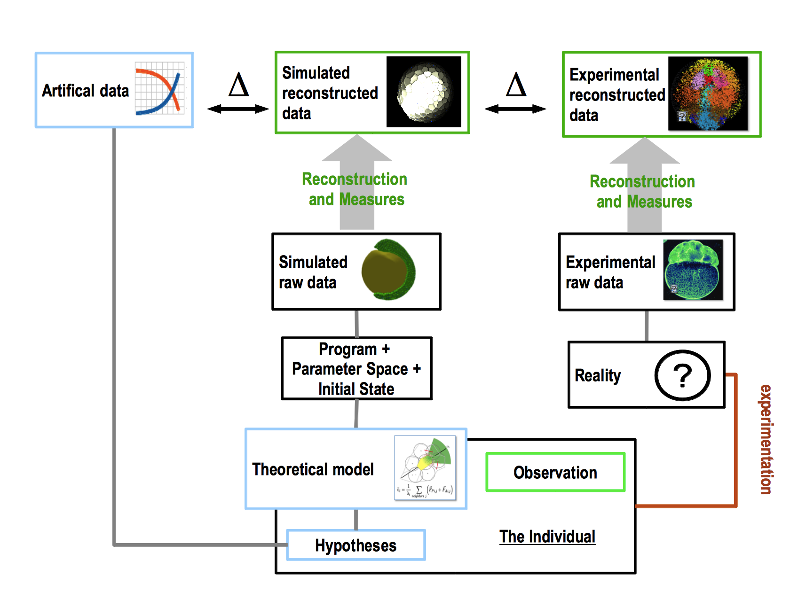
Summary of the methodological workflow adopted for this project. The top left \(\Delta\) symbolizes the theoretical fitness (TF) and the top right \(\Delta\) the experimental reconstruction fitness (ERF).One of the earliest computer simulations of spatial transformation during vertebrate development.A. Appearance of the neural plate immediately after isolation without notochord at stage 13. B. Shape attained in the same explant when controls had reached mid-neurula stage 15. C. Results of a computer simulation using shrinkage alone, which would be compared to B. Images and caption from Jacobson and Gordon, 1976 .
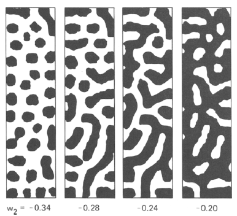
Patterns produced with the activator-inhibitor model. As inhibition is decreased (left to right), the spot pattern connects up into a pattern of stripes. Images and caption from Young, 1984 .
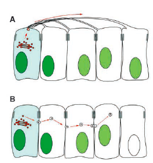
Models for morphogen transport. (A) A model for cytonemes. Cells at the periphery of the imaginal disc extend long processes, cytonemes, towards the AP border, where Dpp is expressed (light blue). (B) A model for argosomes. The basolateral membranes of imaginal disc cells vesiculate and travel throughout the disc epithelium. Image and caption from Tabata and Takei (2004) Scaling of morphogen gradients. (d) The ratio (blue) between two gradients emanating from opposing edges of the field (green and red) can provide scaling of a signaling gradient. Left panel: wild type field; right panel: larger field. Image and caption excerpt from Selected illustrations from the literature of epithelial cell shaping and division patterns. A: Comparison of the distributions of polygonal epithelial cells obtained from simulation (yellow), the Drosophila wing disc (pink), the Xenopus tail epidermis (green) and the Hydra epidermis (blue) . B: Schematized Markov chain model expressing the proliferation dynamics of polygonal cells and used in the simulation of A . C: Typical cell division event in a vertex-based model .
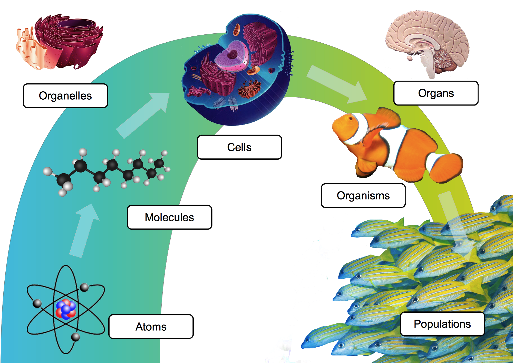
Biology is studied at many levels of organization.The hierarchy of level of organization of physical matter. At each level of organization, entities are complex systems composed of a great number of small, repeated elements. A: Level view. B: Integrated view.Summary table of the developmental models and principles reviewed in Section 2. (Part I)Summary table of the developmental models and principles reviewed in Section 2. (Part II)General diagram of the MECAGEN project. a: Biomechanical processes, including a passive and active forces (see summary of Chapter 3 above). b: Molecular/genetic regulation and signaling processes, including gene regulation networks, intracellular protein concentrations, extracellular ligands secretion, diffusion and binding.
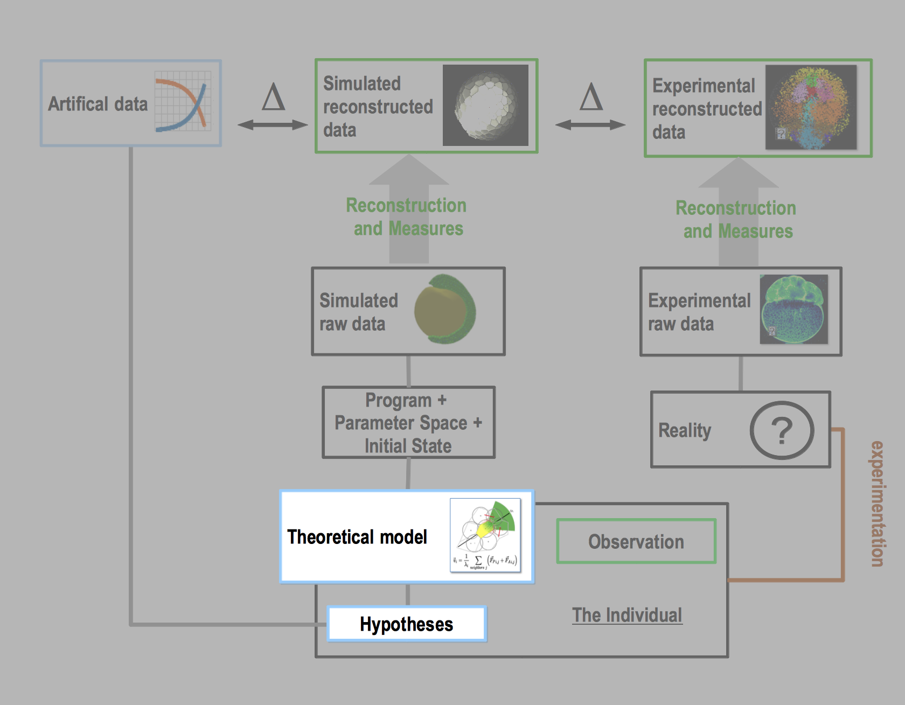
Situation of Chapter 3 in the methodological workflow.The schematic categorization of the models adopted in this review.
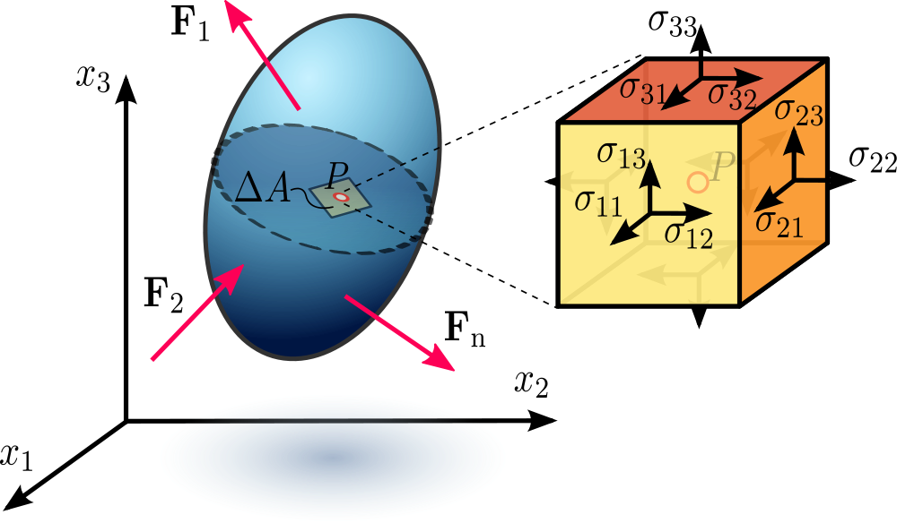
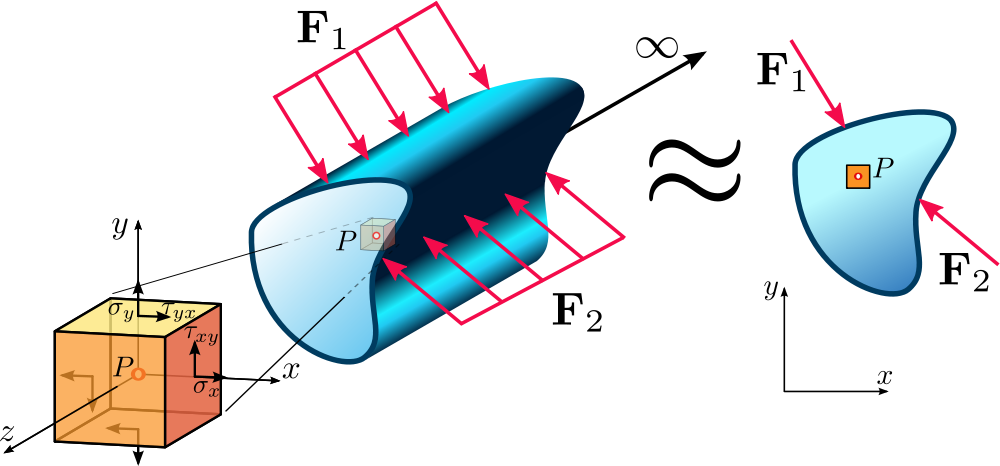
Stress and Strain. Left. Stress from a loaded deformable material body assumed as a continuum from Wikipedia. Right. Plane strain state in a continuum from Wikipedia.
Cellular Potts Model on-lattice space.
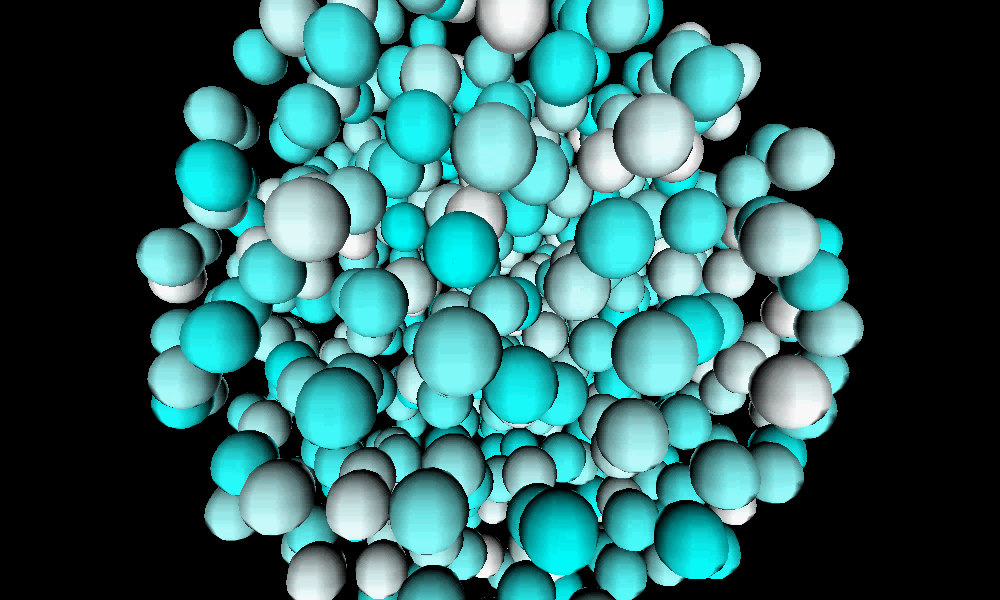
One of our early experiments of single-particle cell models exploring the biomechanics of the MECAGEN project. Each cell is represented by a small sphere and interacts with its nearest neighbors in a Delaunay tessellation through elastic forces (see Section 3.2).Video of single-particle cell division. This corresponds to Fig. .
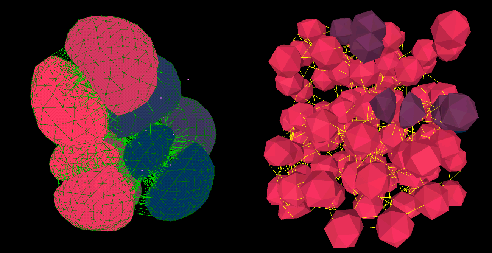
Two of our early experiments of multiparticle cell models exploring the biomechanics of the MECAGEN project. Left: Each cell is a sac filled with a great number of subcellular elements, appearing as vertices of a triangular mesh on the cell membrane. Green edges schematize intercellular adhesion forces (Movie ). Right: Similar experiment with simpler empty polyhedric cells.Video of multiparticle cell division and growth. This corresponds to Fig. , Left.
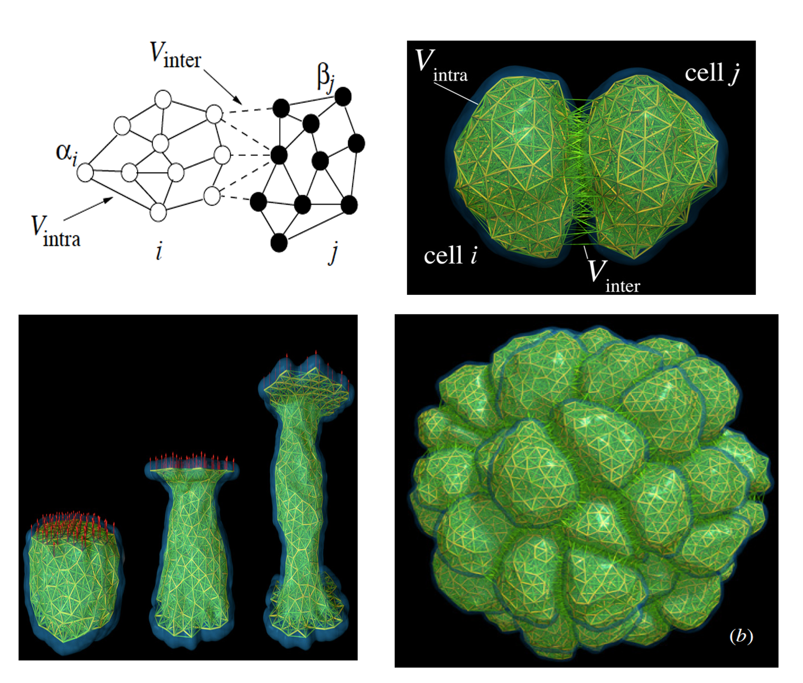
Illustrations of the Subcellular Element Model (ScEM). Top left: Schematic diagram showing two cells, \(i\) and \(j\), and a subset of the intra- (solid lines) and intercellular (dashed lines) interactions between their sub-elements (open circles in \(i\), filled circles in \(j\)). Image and caption adapted from . Top Right: Visualization of two interacting cells simulated using the ScEM and comprising about 500 elements each. Image and caption from . Bottom left: Visualization of an ScEM simulation of a single cell being stretched by a constant unilateral applied force. Image and caption from . Bottom right: A spherical cluster of about 110 cells with about 370 elements per cell. Image and caption from . Ratio of the physical volume of a particle over the volume of its local interaction field. Atoms and planet have an interaction range that is much larger that their physical envelope whereas cells can only mechanically interact by physically touching their neighbors.2D Voronoi diagram generated with the Voronoi sweeping algorithm applet by H. Liefke.A Delaunay triangulation in the 2D plane. Black dots are the particles, black lines their Delaunay neighborhood links, and red dots the circumcircles' centers. No circumcircle contains a particle in its interior. Image from http://en.wikipedia.org/wiki/Delaunay_triangulationTypical profile of the contact radius as a function of the particles' distance in contact mechanics (with adhesion). In abscissa: distance between the particles; in ordinate: contact radius. As the adhesive energy increases or the elastic modulii decrease, the equilibrium contact surface area tends toward the upper left part of the curve. Multicellular limits of contact mechanics. As the adhesion energy increases, the contact surface areas become larger and the volume of the central cell is not conserved (bottom right). Contact mechanics does not deal well with multiple surfaces of contact when triple junction points appear (from top right to bottom). Output of the neighborhood algorithm. Left: A 2D swarm of cells characterized by various given positions and radii. Right: The neighborhood links (black edges) and contact surface areas (red edges) between cells calculated by the method described in this section.Schema of the particle-cell and its maximum distance of deformation. The smaller circle gives the radius of the spherical cell and the larger circle gives the maximum distance of deformation. Estimation of the contact surface area in a weighted Delaunay/Voronoi simulation. An ellipsoid filled with 300 cells is artificially deformed (stretched and compressed) to generate various distance-surface measurement pairs. Blue cells indicate local compression (i.e. weighted Voronoi volume less than theoretical volume), red cells indicate local dilation.Estimation of the contact surface area in a weighted Delaunay/Voronoi simulation. An ellipsoid filled with 300 cells is artificially deformed (stretched and compressed) to generate various distance-surface measurement pairs. Blue cells indicate local compression (i.e. weighted Voronoi volume less than theoretical volume), red cells indicate local dilation.
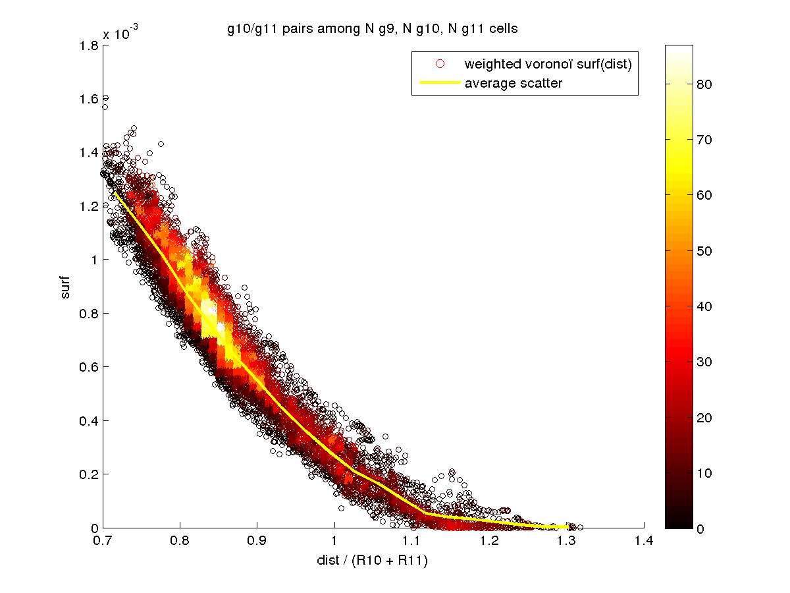
Scatter plot of the contact surface area between neighboring Voronoi domains as a function of the distance between their centers. Each dot is a surface-distance pair of values obtained from two neighbors according to the weighted Voronoi algorithm. The color map reflects the density in plot space (white for highest density). The central yellow curve is the regression of the distribution (segmented curve calculated at discrete distance intervals).
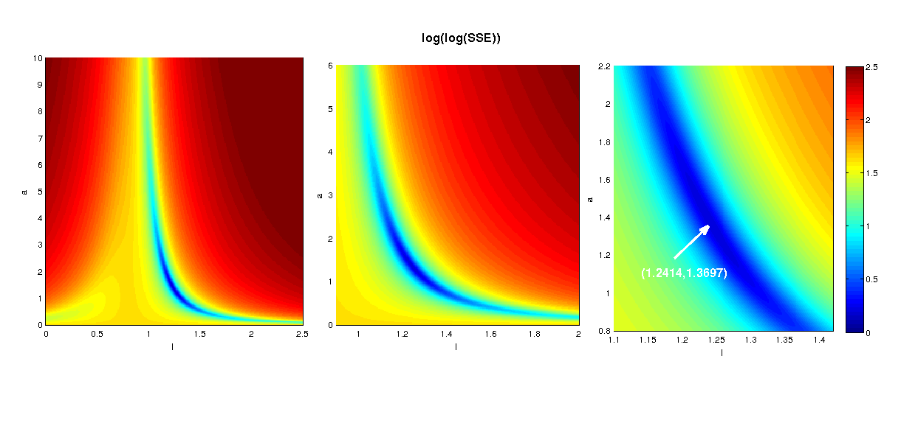
Heat map of the sum of squared errors of prediction (SSE) for various pairs of parameters \((a,c_{\mathrm{max}})\). Blue regions indicate the best fitness domains, with point \((a=1.3697 , c_{\mathrm{max}}=1.2414)\) representing the absolute best fit. In abscissa: \(c_{\mathrm{max}}\); in ordinate: \(a\); in color: \(\log(\log(\mathrm{SSE}))\) to accentuate the contrast.Comparison of the best fit with measures from various experiments. An example of Gabriel graph on four nodes K, L, M and N. Only edges KL, LM and MN are valid because the disks whose diameters are these edges do not contain any other node (whereas, for example, the disk based on LN contains node M).A 2D Gabriel graph is a subset of a Delaunay triangulation. Here, 5 solid lines represent the Delaunay edges. The Gabriel graph has only 4 of them because it excludes edge \(ab\). Visually, a Delaunay edge is also a Gabriel edge if it intersects the contact border (dashed lines) between the two cell domains (schema from )Perfect hexagonal lattice. In the 2D plane, the hexagonal lattice configuration realizes the densest packing of disks.
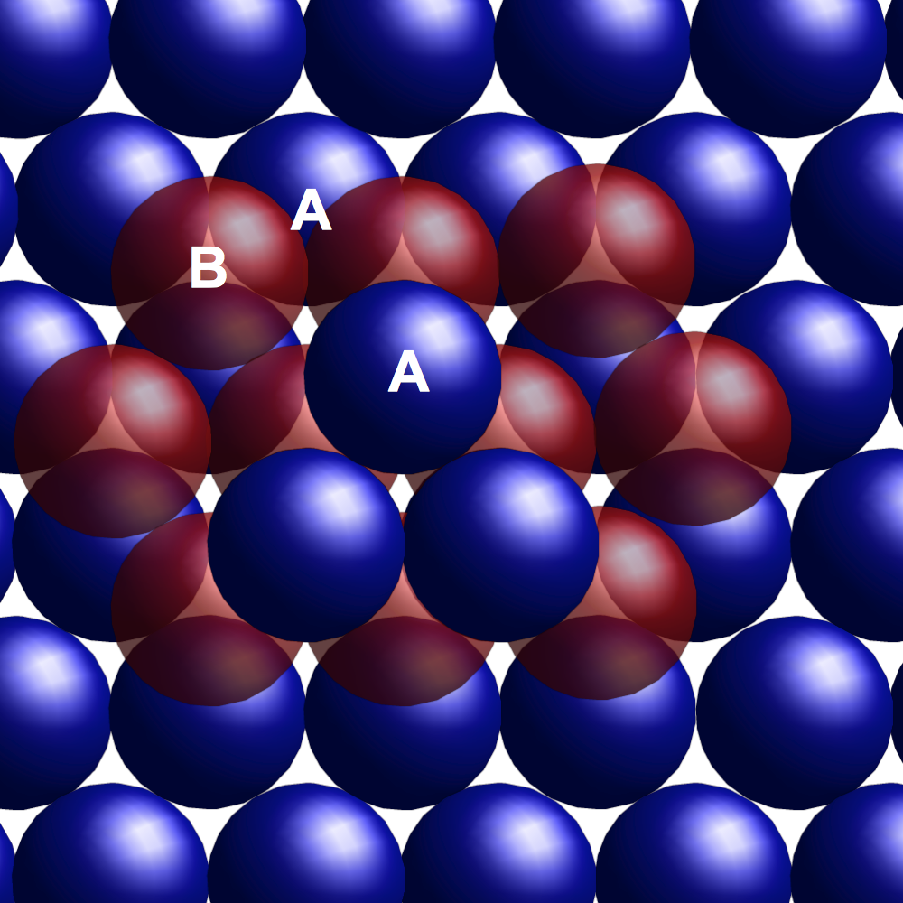
Hexagonal close packing in 3D. Trapezo-rhombic dodecahedra (TRD) constitute the Voronoi domains of a maximally compact 3D packing of equally sized solid spheres.The green sphere has the same volume as the trapezo-rhombic dodecahedron. The orange sphere has a radius \(c_{\mathrm{eq}}R_i\) tangential to each face of the TRD.Schema of the particle-cell, its equilibrium distance and its maximum distance of deformation. Neighbor particle-cells in attraction (left), equilibrium (middle) and repulsion (right) configuration.Plot of the linear spring-like force \(\vec{F}^{P,\mathrm{lin}}\). The repulsion coefficient \(w_{\mathrm{rep}}\) is fixed, while the adhesion coefficient \(w_{\mathrm{adh}}\) can vary. Here, the equilibrium distance is \(r^{\mathrm{eq}} = 1\).Contact surface area \(A_{ij}\) as a function of intercellular distance \(r_{ij}\). Here, the sum of \(R_i\) and \(R_j\) is \(1\).Plot of the relaxation force \(\vec{F}^P\) with variable adhesion coefficient \(w_{\mathrm{adh}}\).
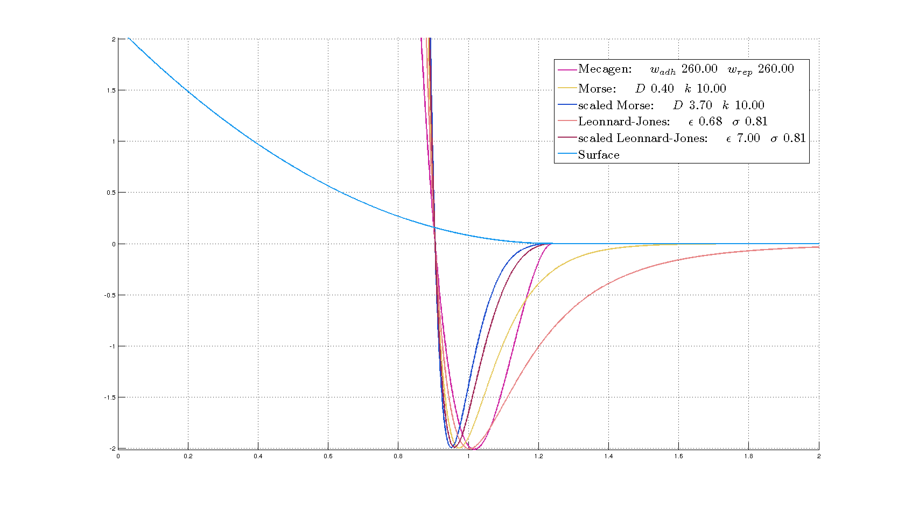
Comparison of the relaxation force used in MECAGEN with various classical attraction-repulsion forces. (See legend inset.)
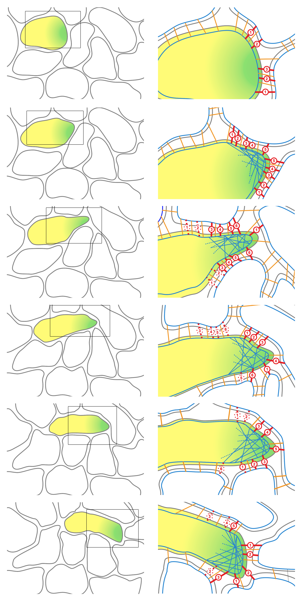
Cellular protrusion illustrated at the subcellular level. The cell cytoskeleton is in blue, the cell membrane in grey, the thin orange edges are the regular adhesion bridges and the thick red edges are focal adhesion points, related to the protrusion. The gradient of color in the cell interior reflects the polarization axis. New focal adhesion points appear at the tip of the cell, move back, then disappear as the cell moves forward.Idealized representation of the protrusive activity in MECAGEN. Green arrows represent the cell interior flow and red arrows the cell neighborhood flow, as the central cell exerts a protrusion over its surroundings.
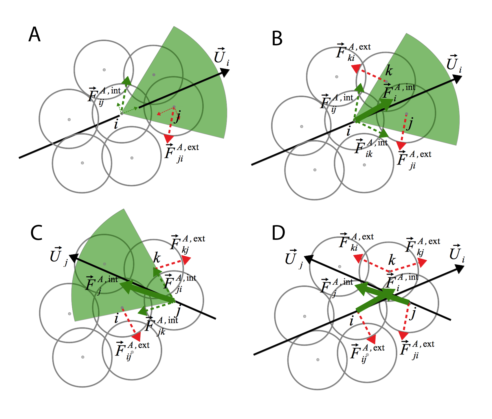
Schematic representation of active protrusive activity in MECAGEN. See text for details. This illustrates the formalization of the idealized mechanism of Fig. in the particle-based framework. (A,B) The polar domain (green slice) of cell \(i\), denoted by \(\mathcal{N}^{t+}_i\), contains two neighbor cells \(j\) and \(k\), over which \(i\) exerts a protrusive force. Intrinsic forces are shown in green and extrinsic forces in red. (A) Highlighting one pair of opposite forces. (B) Forces produced by \(i\)'s activity. (C) Forces produced by \(j\)'s activity if \(j\), too, happens to be protruding. (D) The net resulting active forces (not shown) are obtained by adding the net resulting '\(\mathrm{int}\)' and '\(\mathrm{ext}\)' arrows on each cell.Situation of Chapter 4 in the methodological workflow.Example of BioTapestry representation of a developmental gene regulatory network (GRN) in the zebrafish. Figure from Chan et al. (2009) .Example of abstract gene regulatory network (GRN) produced for this study using the BioTapestry software. This GRN illustrates the typical molecular/genetic regulation and signaling components used in MECAGEN: protein-protein interactions (PPI), genes and their cis-regulatory elements (Gene X), signal secretion module (Secretor X), signal transduction module (Receptor X). The solid arrows in the cell interior represent intracellular proteins; the dashed arrows outside the cell membrane represent extracellular ligands. Practically, the topology and parameters of the GRN are all specified by the user of BioTapestry, then an XML file is saved and can serve as an input into the model.
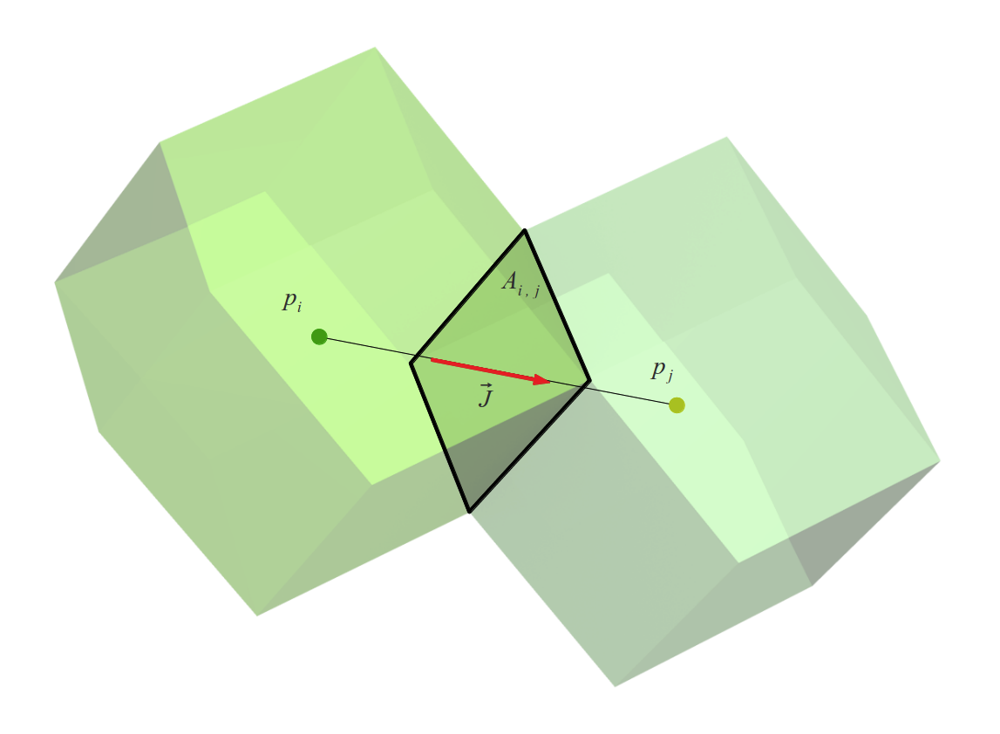
Schema of the flux of ligand. Here, \(\vec{J}\) represents \(\vec{J}_{a,ij} = \vec{J}_{a,ji}\), the flux of ligand \(Q_a\) between the cellular volumes occupied by neighboring particles \(i\) and \(j\).Double negative gate GRN subcircuit. We generated this network map with the BioTapestry software from the input file of our experimental model.Evolution of the proteins concentration in the region where X is expressed. See text for the explanation of the curves' profile. The tagged vertical bars A, B, C, and D indicate the timing of the snapshots shown in Fig. . The curve of Target1 (pink) is hidden by the curve of Target2 (blue) as their dynamics is exactly the same.Spatial evolution of the protein concentration in the double negative gate experiment. The letters correspond to the bars of Fig. . Each image is composed of 6 simultaneous views of the simulated cell population. Colors represent protein types and shades represent their concentrations (dark for low, bright for high). The top left corner of each image is the region where protein X is artificially secreted.Real-time representation of the simulation in the double negative gate experiment. Each image is composed of 6 simultaneous views of the same simulated cell population. Colors represent protein types and shades represent their concentrations (dark for low, bright for high).Situation of Chapter 5 in the methodological workflow.Waddingtonian timeline of cell types \(\{\mathcal{T}(i, t)\}\). The grey bar on top is the time axis (oriented left to right), segmented into stages \(S = [t_S, t_{S+1})\). (The thin white time tick is the current time step of the simulation and the thick red time ticks mark backup & restore points of the entire embryo state.) The colored horizontal branches symbolize the types that cells can potentially take, and correspond to the grooves of a Waddingtonian landscape (Fig. ). Here, we can see 5 stages in the timeline corresponding respectively to the onset of 1 type (red), 2 types (red and blue), ..., and 5 types (red, cyan, green, blue, yellow). Differentiations (type transitions) may happen during each stage, for example shown here in Stage 3: the three thin dashed arrows correspond to the differentiation table of Fig. below, indicating that type red may become green, green may become red, and blue may become green. In this WTS graphical interface, stages can also be selected manually to specify their parameters (as will be shown in the next figures): here, Stage 5 is selected by clicking on \(t_5\), which is represented by gray circles on all the type nodes.Visualization of the differentiation (type-transition) operator \(\mathscr{D}\). (A) This particular table represents the possible transitions between cell types during Stage 3 above, thus can be denoted \(\mathscr{D}_3\). It contains three differentiation modules displayed in one column, one module by origin type. In each module, the current cell type \(\mathcal{T}(i, t)\) is represented by the frame color, the target cell type by the color (or id) of the bottom-right block, and the ligand-threshold-sign triplet \((Q_a, \theta_a, \epsilon_a)\) by the top-left block's color (or id), bottom-left block's value, and top-left block's value. Each cell changes its type depending on whether \(\epsilon_a q_{a,i} \geq \epsilon_a \theta_a\). (B) The generic template of one differentation module inside one origin type.
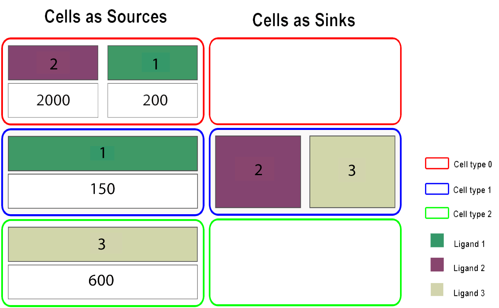
Visualization of the ligand diffusion parameters \(\mathscr{L}\). This is the particular table at Stage 3, thus can be denoted \(\mathscr{L}_3\). Left column: Cells as sources. Each module corresponds to a current cell type (denoted by its frame color) and is composed of one or several pairs of boxes displayed vertically. The top box indicates the color (or id) of the secreted ligand \(Q_a\). The bottom box indicates the rate \(s_a\) of ligand secreted by each cell belonging to the cell type (defined in Section 4.2.1). Thus, red cell types 0 secrete both ligand types 2 (dark green) and 1 (purple), with rates respectively 2000 and 200. Right column: Cells as sinks. Each module only specifies the type (color or id) of the ligand that the cells can absorb, if any (red and green cell types absorb none). No particular quantity is specified as we assume here that all the ligand is absorbed by the cells acting as sinks.
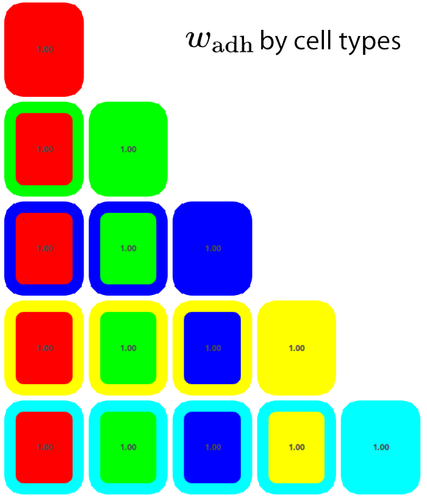
Visualization of the passive adhesion coefficients \(\mathscr{P}\). This is the particular table at Stage 5, thus can be denoted \(\mathscr{P}_5\). The matrix is symmetrical so only half of the coefficients are displayed. The outer frame color represents cell types by row, and the inner color cell types by column. Here, all values of \(w^{\mathrm{adh}}_{\mathcal{TT'}}\) are uniformly set to 1.00.
Visualization of the active protrusion coefficients \(\mathscr{A}\). This is the particular table at Stage 2, thus can be denoted \(\mathscr{A}_2\). (A) Two cell types are involved here: red and green. In each cell type's module, protrusion is represented by four parameters. Top-left: target cell type; top-right: the chosen polarization axis id \(d\); bottom-left: the intensity of the protruding force \(f^A\); bottom-right: the type of protrusion, either monopolar\(+\), monopolar\(-\) or bipolar. (B) The generic template of one active protrusion module inside one origin type.
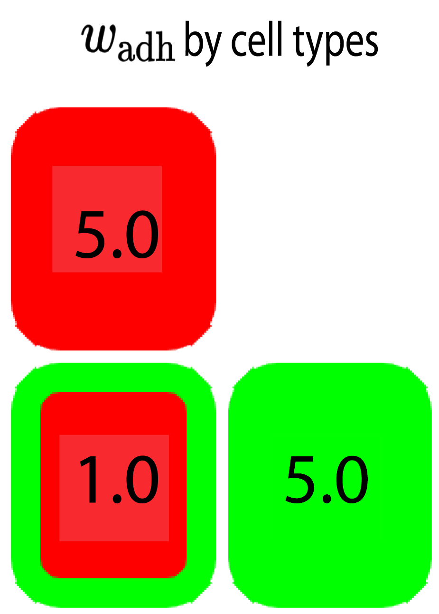
Experiment I passive adhesion table \(\mathscr{P}\). See definition in Section 5.2.3 and text for details. In this case, homotypic adhesion is strong (5.0), heterotypic adhesion is weak (1.0).Experiment I active protrusion table \(\mathscr{A}\). See definition in Section 5.2.4 and text for details.Experiment I: Strong homotypic adhesion and random protrusion axis. See text for comments. The homotypic adhesion coefficient (\(w_{\mathrm{adh}} = 5\)) is higher than the heterotic coefficient (\(w_{\mathrm{adh}} = 1\)). All cells have bipolar protrusive activities with random polarization axes (mode (d) in Section 5.1). The rate of cluster size growth is decreasing over time. The time is provided through the number of simulation time steps.Experiment I: Strong homotypic adhesion and random protrusion axis. For caption, see Fig. .
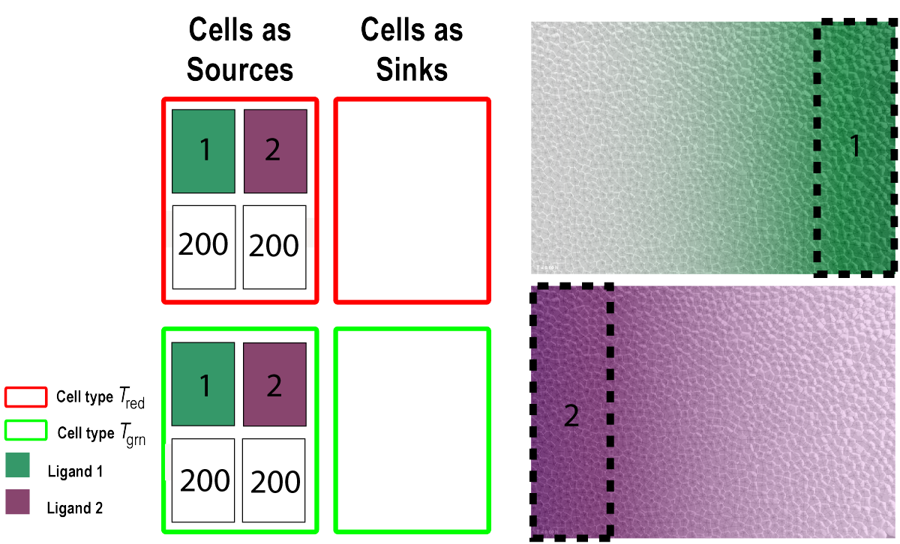
Experiment II ligand diffusion table \(\mathscr{L}\). See definition in Section 5.2.2 and text for details. In summary, both cell types secrete both ligand types \(Q_1\) and \(Q_2\) with the same secretion rates \(s_1 = s_2 = 200\) simulation units. They do this, however, only if they enter one of the source regions on either vertical border of the domain.Experiment II passive adhesion table \(\mathscr{P}\). See definition in Section 5.2.3 and text for details.
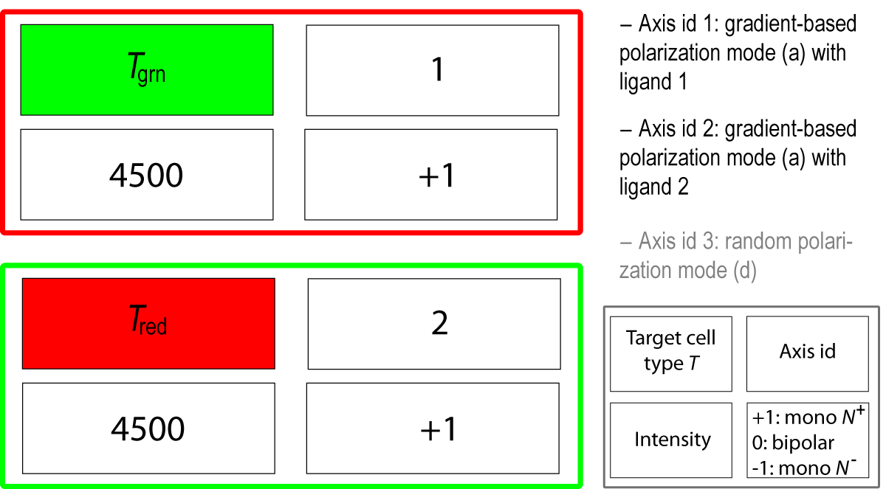
Experiment II active protrusion table \(\mathscr{A}\). See definition in Section 5.2.4 and text for details. In summary, protrusion behavior here is heterotypic, i.e. cells act only upon neighboring cells of the other type.Experiment II: Ligand-based heterotypic protrusion, planar diffusion sources. See text for comments. Two hidden ligands are diffusing from the left and right borders of the cell bilayer. Green cells' polarization axes are oriented toward the right source and red cells' axes toward the left source. Each cell type is exerting monopolar protrusion over the other cell type (heterotypic contacts). Experiment II: Ligand-based heterotypic protrusion, planar diffusion sources. For caption, see Fig. .Experiment III ligand diffusion table \(\mathscr{L}\). See definition in Section 5.2.2 and text for details. The differences with Experiment II's table \(\mathscr{L}\) is a unique source of ligand \(Q_1\) and a central region of secretion creating a (quasi) radial gradient.
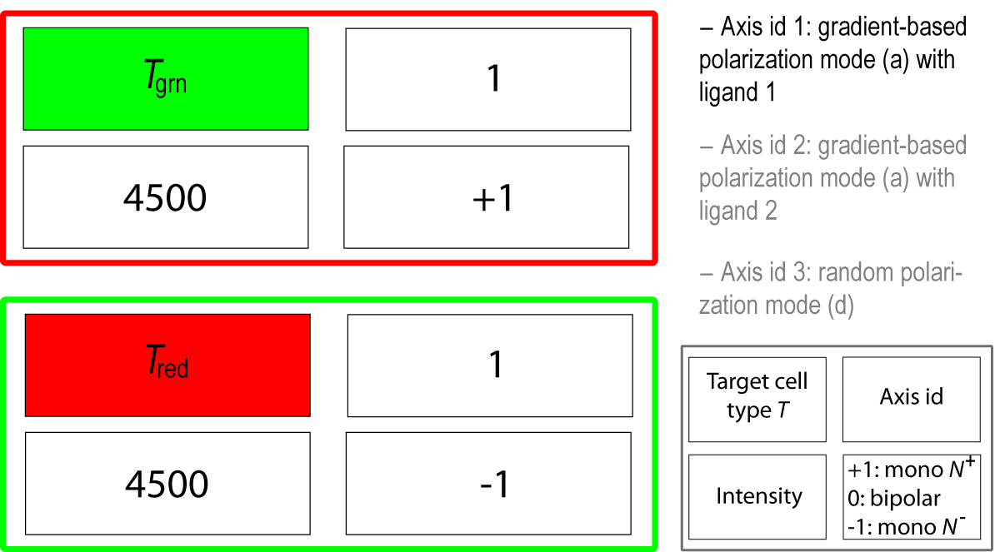
Experiment III active protrusion table \(\mathscr{A}\). See definition in Section 5.2.4 and text for details. The differences with Experiment II's table \(\mathscr{A}\) is that the polarization mode relies on only one type of ligand \(Q_1\) and the green cells' monopolar protrusion is oriented in the negative direction.Experiment III: Ligand-based heterotypic protrusion, radial source. See text for comments. A single ligand is diffusing from the center of the cell bilayer. All cells' polarization axes are roughly radial, the red ones oriented toward the center (uphill along the gradient) and the green ones away from the center (downhill). As in Experiment II, each cell type is exerting monopolar protrusion over the other cell type (heterotypic contacts).Experiment III: Ligand-based heterotypic protrusion, radial source. For caption, see Fig. .
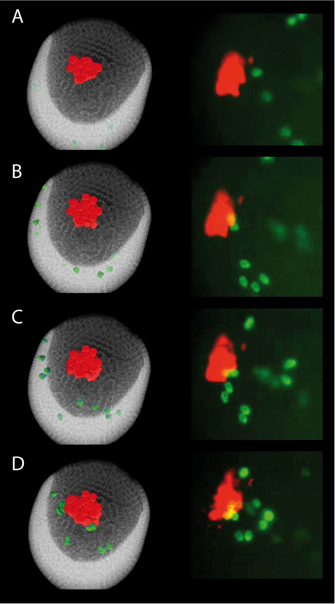
Experiment IV: individual cell migration. Left: Simulation involving a three-type cell population: a few cells secrete a ligand (the red color represents its thresholded concentration), the green cells are exerting monopolar protrusion over all their neighbors oriented uphill along the gradient, and the gray cells are inactive. Right: Microscope images of germ cells (green) migrating toward central cells expressing SDF-1a (red), which serves as a guidance cue. Images from the right column adapted from the E. Raz Lab's website http://zmbe.uni-muenster.de/institutes/izb/izbres.htmExperiment IV: simulation of individual cell migration. For caption, see Fig. , left column.Experiment IV: recording of individual cell migration. Microscope movie from the E. Raz Lab's website http://zmbe.uni-muenster.de/institutes/izb/izbres.htm. For caption, see Fig. , right column.
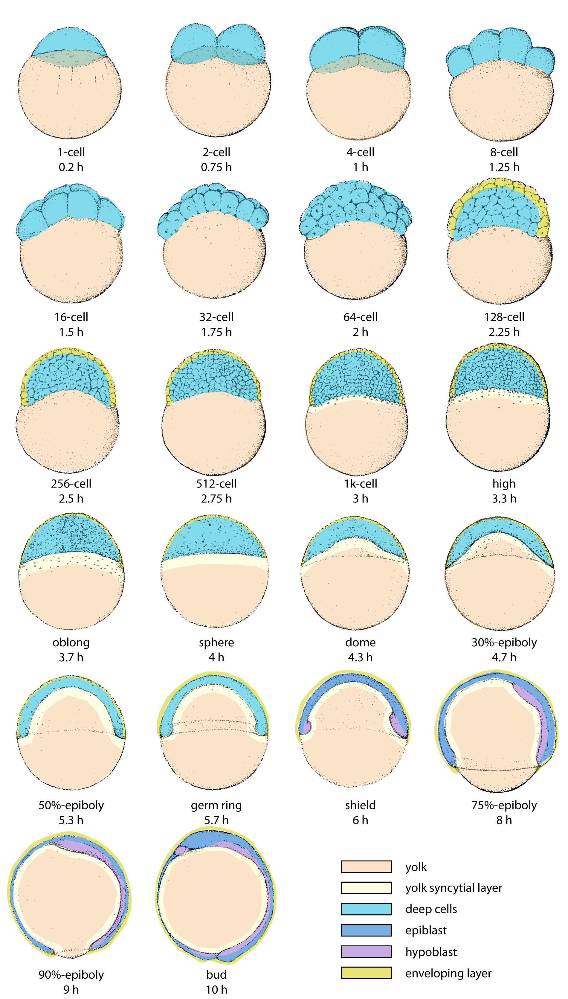
The zebrafish early developmental stages. Adapted from Kimmel . From the 1-cell stage until the end of gastrulation, lateral views with animal pole to the top and dorsal side, identified by the shield stage, to the right. The enveloping layer (EVL) is in yellow. The deep cells (in blue) lead through gastrulation to the hypoblast (in purple) and the epiblast (in dark blue). The whole spatio-temporal sequence is expected to last 10 hours at 28.5 degree celsius.Schematic illustration of the changes in the organization of the cortical cytoplasm of the yolk cell in relation to other cell types in zebrafish embryo during epiboly in normal embryos. The organization of microtubule networks in the YSL and YCL observed in this study is indicated by thin lines. Only part of the blastoderm is shown to reveal the morphology of the yolk cell. The relative sizes of elements are not proportional. (A) The late blastula just before the onset of epiboly (sphere stage, 4.0 h). The blastoderm, composed of the internal deep cells and the superficial enveloping layer (EVL), is positioned atop of the syncytial yolk cell. The animal surface of the yolk cell underlying the blastoderm is flat. Most of the yolk syncytial nuclei (YSN) are in the external yolk syncytial layer (external YSL) vegetal to the blastoderm. The microtubules of the external YSL form a network. The organization of microtubules in the internal YSL at this stage of development is not known. The microtubules of the a nuclear yolk cytoplasmic layer (YCL) radiate from the organizing centers associated with the vegetal-most YSN and are aligned along the animal-vegetal axis. (B) 30 percent epiboly (4.7h). The blastoderm covers 30 percent of the yolk cell that bulged toward the animal pole taking on a dome shape. The external YSL has contracted and exhibits densely packed YSN and a dense network of microtubules. The external YSL is partially covered by the expanding vegetally blastoderm. (C) 50 percent epiboly (5.2h). The blastoderm arrives at 50 percent of the yolk cell latitude and covers almost completely the YSN which is also migrating vegetally and the YSL microtubule network. Only the YCL with its array of the animal-vegetal microtubules is visible vegetally to the blastoderm. (D) 60 percent epiboly (6.5h). Deep cells cover 60 percent of the yolk cell. The YSN nuclei are now visible in front of the blastoderm and lead the epibolic movement. The YSN are often stretched along the animal vegetal axis. The EVL rim is closer to the vegetal pole than the margin of deep cells. The YCL is diminished. Figure and caption from Solnica-Krezel and Driever (1994) Characterization of Ca(2+) signaling in the external yolk syncytial layer during the late blastula and early gastrula periods of zebrafish development. Timeline to show the major events that occur during: the appearance of the YSL; the division, distribution and movement of the E-YSN; the movement of the I-YSN; and the reported Ca2+ signals generated at or near to the blastoderm margin, during the blastula and early gastrula periods. New data regarding E-YSN clustering, changes in inter-nuclear distance in the E-YSL over time and the generation of E-YSL Ca2+ waves are also shown. MBT, midblastula transition; AP, animal pole; VP, vegetal pole. These features correlating events at different scales does not bring us closer however to an integrated model of zebrafish blastulation and gastrulation. But it indeed provides some hints in the ingredients that the model should take into account. Figure and caption from Yuen et al., 2012 Time-lapse sequence showing the tail bud closure at the vegetal pole. The left part of the video shows the projection of a slice delimited by the two planes visible on the right part. On the top left, internalization of the epiblast seems to occur, after the end of internalization described in the literature.Time-lapse sequence showing the movement of ectodermal precursor (epiblast) cells and mesendodermal precursor (hypoblast) cells in the shield region of wild-type embryos for 90 min at the onset of gastrulation. Video from Time-lapse video of cell movements at the blastoderm margin in the shield region, from the shield stage. The video was recorded for a total of 123min at 2.5-min time intervals. Sagittal views. Frame size: 206\(\times\)206\(\mu\)m. Video from Time-lapse movie of migrating endodermal cells in a Tg(sox17:EGFP) transgenic embryo from 65 percent to 90 percent epiboly stages. Lateral views with dorsal to the right. Video and caption from .
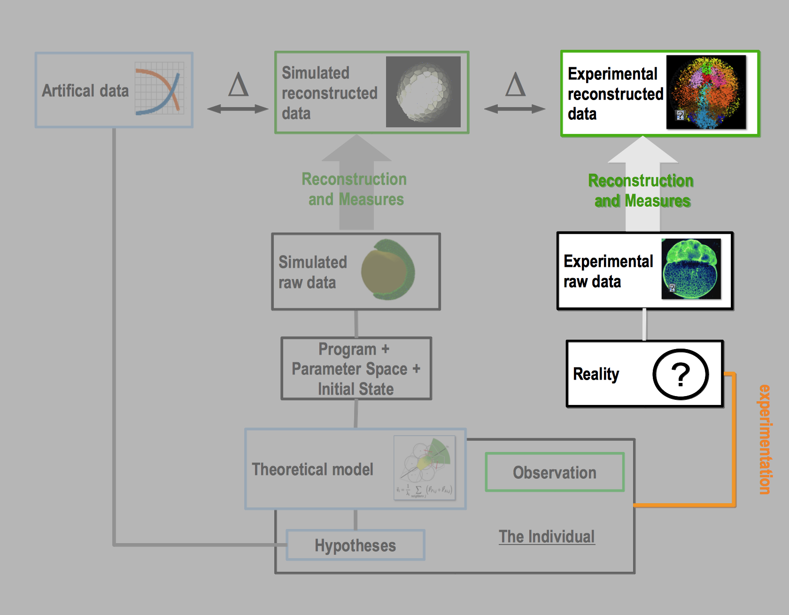
Situation of Chapter 7 in the methodological workflow.The Bioemergences platform.The Bioemergences workflow. Raw images of nuclei and membranes (cyan layer in the diagram) are first filtered by an edge-preserving smoothing method. Cell positions are then extracted from the local maxima of this simplified images versions, and assimilated to the nuclei's positions. They are used to initialize both the segmentation and cell tracking tasks (green layers). The final output is composed of the cell lineage tree and the nuclei/membranes segmentation (red layer).
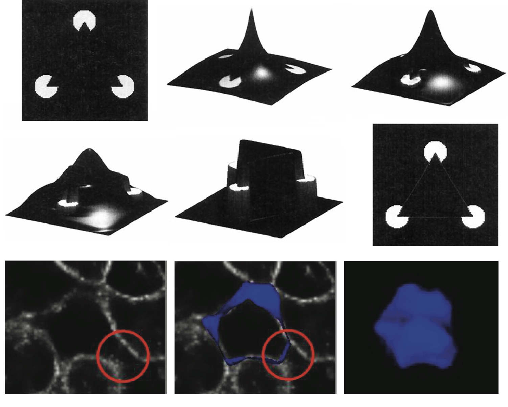
Subjective Surfaces Method. Top and middle rows: 2D example summarizing the main steps of the segmentation algorithm, illustrated on the Kanizsa triangle (from left to right): original image depicting a triangle with missing subjective contours ; construction of a surface located at the center of the triangle; evolution of the surface to minimize its area according to the model equation (two images); steady state condition giving a piecewise constant solution; choice of level set for the surface representing the contour of the triangle. Bottom: Segmentation of a membrane with missing boundary . Raw data displayed as an orthoslice in the x,y plane. Incomplete membrane contour highlighted with a red circle. Segmented membrane represented as an isosurface in blue.
Cell tracking of dataset 070418a. Color code from yellow to blue through grey indicates the orientation of cell displacement (projection of the speed vector on the y axis). Yellow indicates migration from caudal to rostral, blue indicates migration from rostral to caudal, grey indicates null or mediolateral displacement. Each nucleus center is represented by a small cube with a streamline showing its trajectory for the next 12 time steps. Mov-IT Visualisation Platform. (Large movie, 73.3 MB).
Cell trajectories displayed as streamlines and colormap according to the zebrafish fate map at somite stage. Dataset 070418a, reconstructed embryo from animal pole view. Colormap as in the following. Yellow, hypoblast including prechordal plate and notochord; red, presumptive hypothalamus; pink, right eye; light pink, right optic stalk; purple, left eye; light purple, left optic stalk; green, ventral telencephalon; gold, dorsal telencephalon, placodes and neural crest; light blue, ventral midbrain; light brown, dorsal midbrain and dorsal diencephalon; blue, ventral hindbrain; dark brown, dorsal hindbrain; dark blue, ears. Mov-IT Visualisation Platform.Relative movements of cells selected in the prechordal plate (yellow), presumptive hypothalamus (red) and presumptive ventral telencephalon (green). Dataset 070418a, raw data displayed as orthoslice. Lateral view, rostral to the right. Mov-IT Visualisation Platform.Evolution of the averaged speed field with its norm between 4 and 12 hours of development in zebrafish embryo. Dataset 080322a, lateral view. Green axis points towards the dorsal side, red axis towards the animal pole. Colormap between light blue and red related to the norm of the averaged speed field. Singular points in red, separatrices in blue, flow pathways in green. Image and caption adapted from B. Lombardot (2010) .
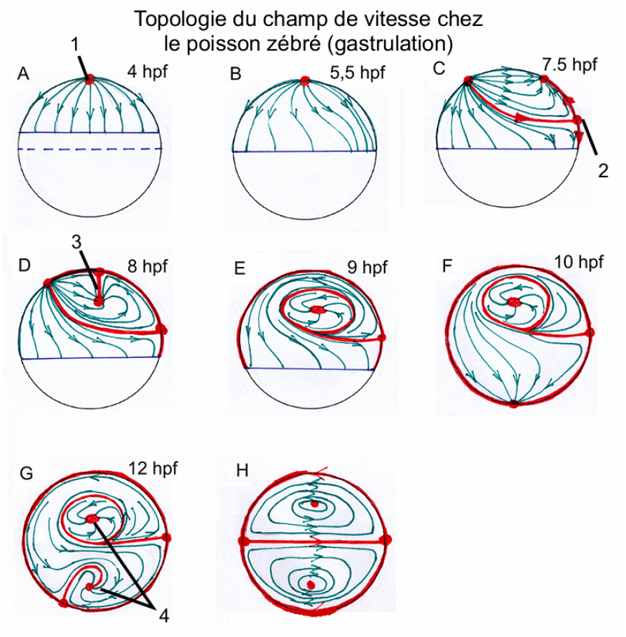
Simplified topology of the speed field in zebrafish embryo between 4 and 12 hours of development. Circles in each figure represent a schematization of the embryo in a lateral view. Dorsal side on the right, ventral on the left. Animal pole on the top, vegetal pole on the bottom. Separatrices represented as red lines, singularities as red dots. Image and caption adapted from B. Lombardot (2010) .Global diagram of the reconstruction workflow of the in toto deformation fields. Original five views produced by the Digital Scanning Light Microscope (DSLM). Isosurfaces have been extracted from the DSLM raw data. Each view is obtained by rotating the embryo 72 degrees (one color per angle of view). A: Sphere stage. B: 40 percent epiboly. C: 75 percent epiboly. D: 90 percent epiboly. E: 8-somite stage. F: 12-somite stage.
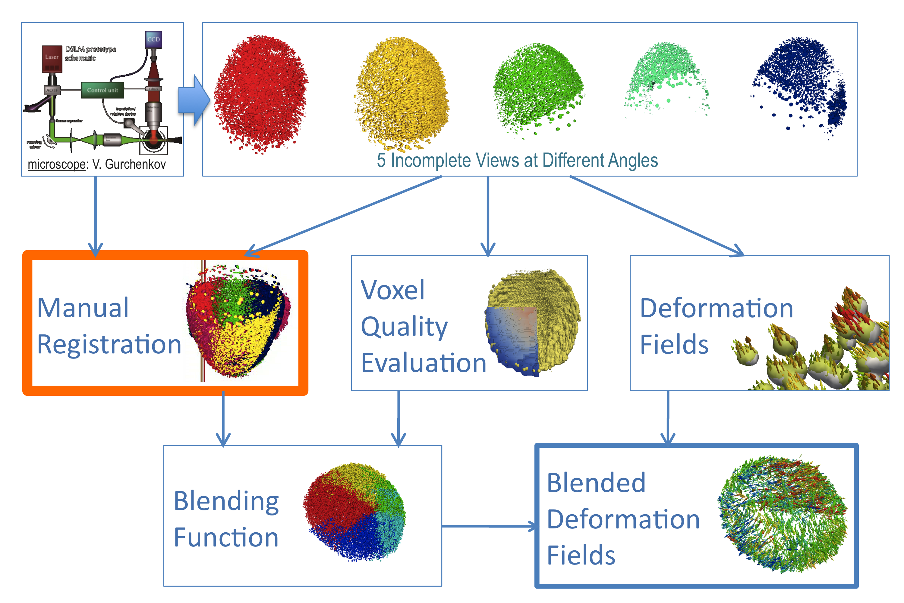
The manual registration component. This process aims at inferring the parameters required for a spatial registration of the five angles of view.
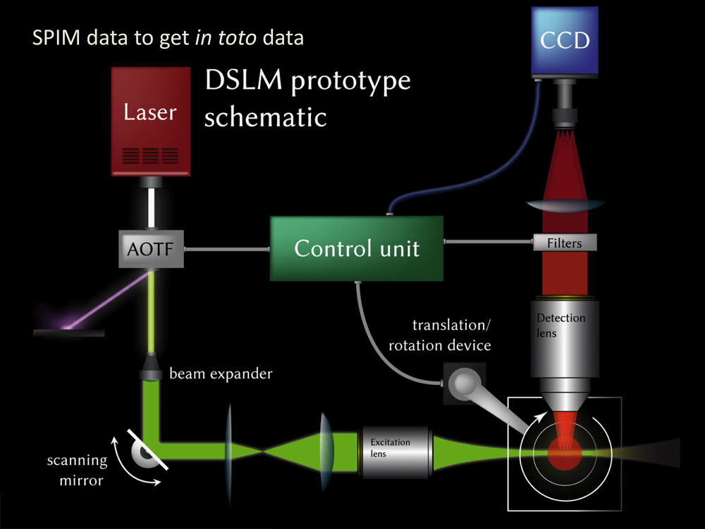
Digital Scanning Light Microscope (DSLM) setup. Diagram after P.J. Keller, E. Stelzer et al. , adapted by V. Gurchenkov.
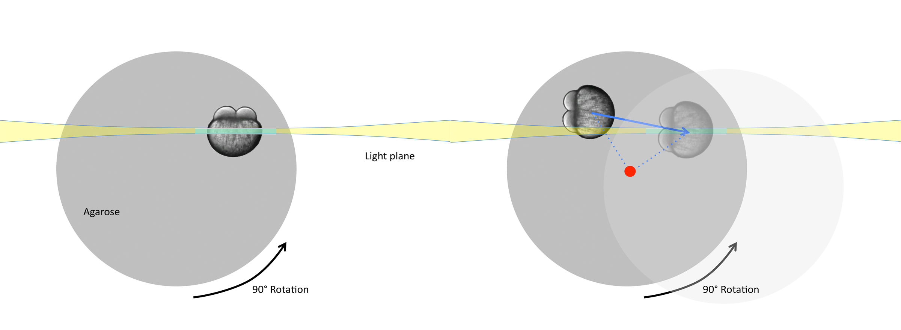
Schema of the calibration phase. Left: The operator centers the embryo in the light plane. Right: To decipher the relative position of the embryo with respect to the center of rotation, the software performs a 90 degree rotation, then the operator must translate the embryo back into the light plane (blue vector).
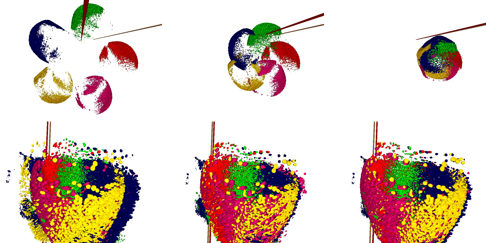
Graphical user interface designed to infer the estimation of the center of rotation. The red line passes through the center of rotation determined by the calibration phase. The brown line passes through the corrected center of rotation. As the user moves the brown line, the five angles of views are repositioned in real time, allowing to infer the best estimation of the center of rotation.
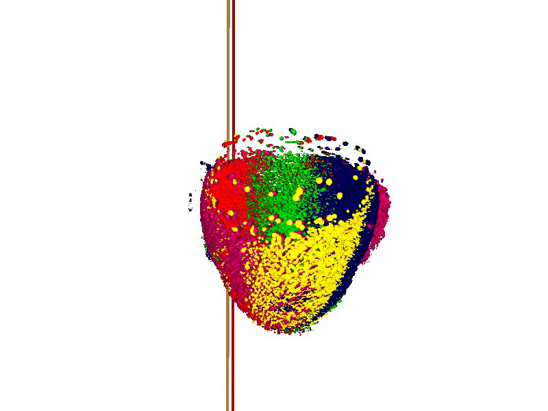
Best match for the rigid manual registration. The marginal yolk nuclei visible on top of the embryo are used to estimate the correct registration parameters.The five DSLM views superimposed by rigid registration. These views are identical to the ones shown in Fig. . A: Sphere stage. B: 40 percent epiboly. C: 75 percent epiboly. D: 90 percent epiboly. E: 8-somite stage. F: 12-somite stage.The voxel quality component. This process aims at quantitatively evaluating the local image quality for each angle of view.The various steps of the voxel quality evaluation component. See text.
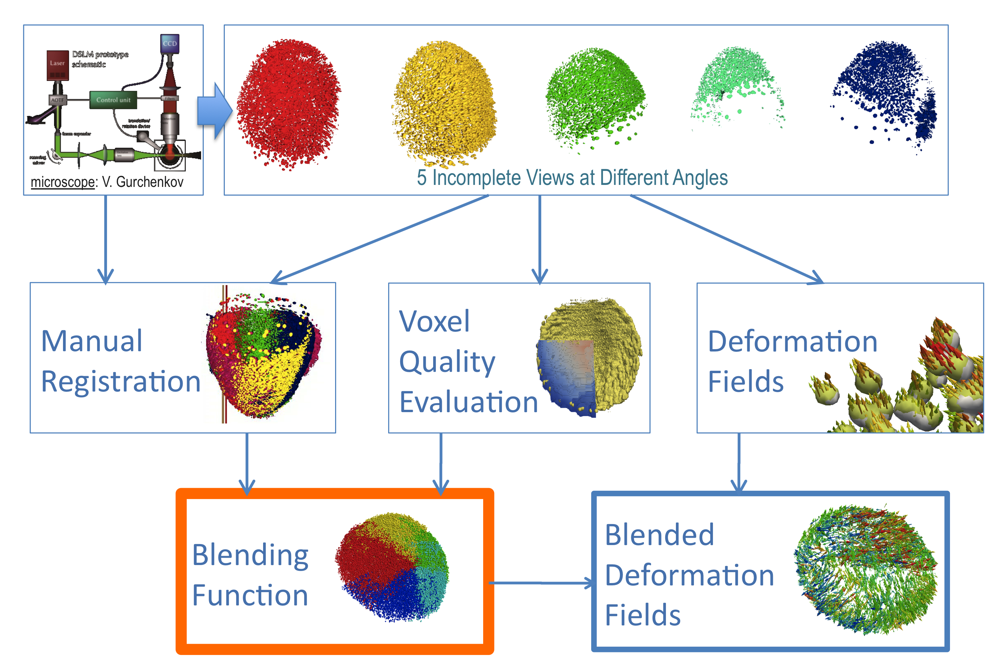
The blending function component. This component builds a function determining what original angle of view has the best quality score for each voxel in the registered space.
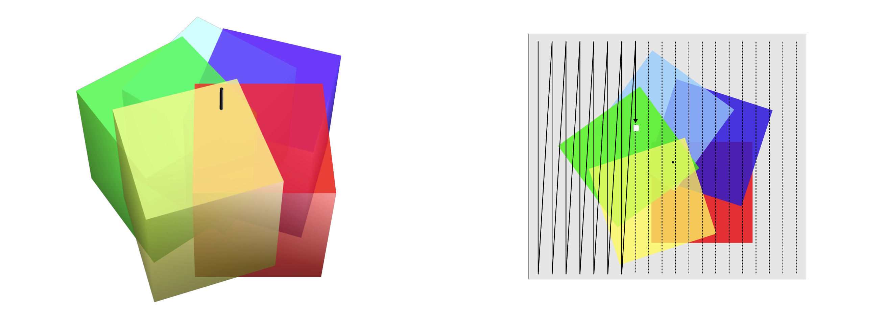
Relative positions of the five views in the registered space. Left: The five cubes represent the original reference frames of the five different views. Right: A 2D illustration of the sequential visit of the registered voxels.Five-valued blending function mask. In the registered space, the color of each voxel represents the id of the original angle of view under which it has the best quality.Output of the blending function applied to the raw voxel intensities.
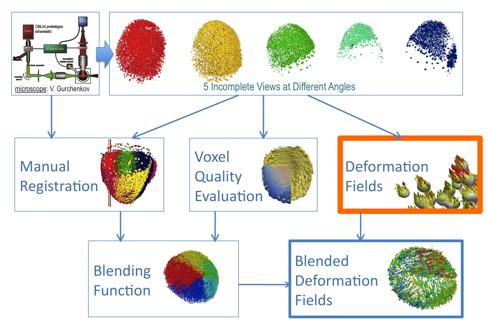
The deformation field component. This component produces a 3D vector field that indicates the direction and amplitude of local displacements in each voxel.One volume V under one of the five angles of view. The white grains represent the envelopes of the nuclei calculated by thresholding the voxels at twice the mean intensity of V.Deformation field between two volumes V and V' at consecutive time steps. The white isosurface represents V, the yellow isosurface represents V'. Not all deformation arrows are displayed.
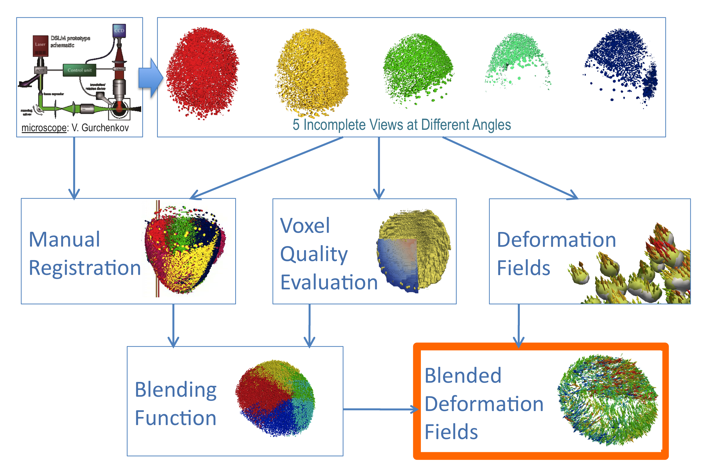
The blended deformation field component. This component combines the blending function with the 3D deformation vector field.Blended deformation field at a given time step viewed from four different angles. (Note that these angles do not correspond to the original angles of view.)Blended deformation field at successive time steps viewed from the same angle.Chapter 8 involves all the components of the methodological workflow introduced in Section 1.1.3.Third harmonic generation (THG) imaging of the zebrafish embryo adapted from . Snapshots from the movie going from the one-cell stage to the 64-cell stage. Developmental timing (min) indicated top left. Scale bar (100 microns) indicated bottom left.Abstract schema of the particle types in the modeled embryo. Green particles represent the cells, yellow particles the external yolk membrane (ym), and red particles the inner lipid droplets or yolk interior (yi).Yolk membrane behavior depending on its particles' topological interactions. A: rank-1 interactions only. B: rank-1 + rank-2 interactions. The structural topology of the yolk membrane is a geodesic dome. A: Icosahedron. B,C,D,E: iterative subdivision of the original icosahedron to obtain the geodesic dome. F: the right vertex is a regular geodesic vertex and the left vertex is one of the 12 original icosahedral vertices. Rank-1 neighbors link in red, rank-2 neighbors link in yellow.Experimental deformation of the egg yolk.Experimental deformation of the egg yolk. 1-cell stage, lateral view, animal pole to the right. \(t_0\): Onset of the deformation. \(t_1\): Maximum deformation. Measurement is realized every 0.8 second. We measure the distance \(L\) between the area pointed by the tip of the bead and the opposite side (black line). Scalebar 500 microns. Plot of the normalized deformation length as a function of time. The shape recovery is asymptotic toward the normalized length at \(t_0\). Full recovery is nearly achieved by 8 seconds.Snapshots of the simulated deformation and recovery. First and third rows: entire yolk from an external point of view. Second and fourth rows: another yolk sliced to reveal the yolk interior particles. A,B,C,D,E,F: compression phase. G,H,I,J,K,L: relaxation phase. Note that these simulated experiments have been realized by manually operating the spherical bead, whereas in the study the manipulation is automated. Original movies are available in Figs. Ranges, cardinalities and units of the four parameters explored in this study.Plots of the simulated normalized deformation length as a function of time. The black thick curve represents the experimental live measurement. The simulated measurements are colored according to their fitness value (from red for the best fitness \(F = 0.1609\) to blue for the worst \(F = 7.1449\)). In ordinate, the normalized length of the yolk diameter is plotted. In abscissa, the time from the moment the bead is pulled away from the yolk surface.
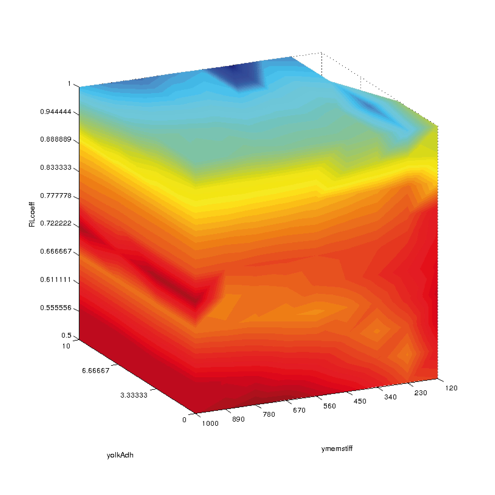
An example of 3D plot of the fitness landscape in parameter space. This figure aims at presenting the coordinate system used in Fig. and Fig. . Here, the repulsion coefficient \(\overline{w}^{\mathrm{y}}_{\mathrm{rep}}\) of the force exerted between yolk interior particles has a fixed value \(3.7\) \(10^{-6}\). The vertical axis is the coefficient \(c_r\), which determines the equilibrium surface of the yolk membrane. The depth axis is the adhesion coefficient, \(\overline{w}^{\mathrm{y}}_{\mathrm{adh}}\) which modulates the cohesion of the yolk interior particles. The width axis is the yolk membrane stiffness coefficient \(\overline{k}_{\mathrm{ym}}\). It should be noted that the values plotted on the depth (resp. width) axis actually correspond to \(w^{\mathrm{y}}_{\mathrm{adh}}\) (resp. \( k_{\mathrm{ym}}\)) and should be divided by \(\lambda_0\) to match the values of the table presented in Fig. .
Fitness landscape of the yolk relaxation experiment.
The left column represents the fitness landscape in parameter space. The middle column shows the normalized yolk volume difference between the simulated phenotype and the targeted volume of radius \(R_{\mathrm{Y}}\). The right column is identical to the left one but keeping only the phenotypes that have a yolk volume less than 20 percent different from the targeted one. All the coordinates are described in Fig. . Each row corresponds to a different value of the coefficient of repulsion between yolk interior particles \( \overline{w}^{\mathrm{y}}_{\mathrm{rep}} \). The value of \( \overline{w}^{\mathrm{y}}_{\mathrm{rep}} \) varies regularly between \(3.7\) \(10^{-6}\) for the top row to \(5.55\) \(10^{-5}\) for the bottom row.
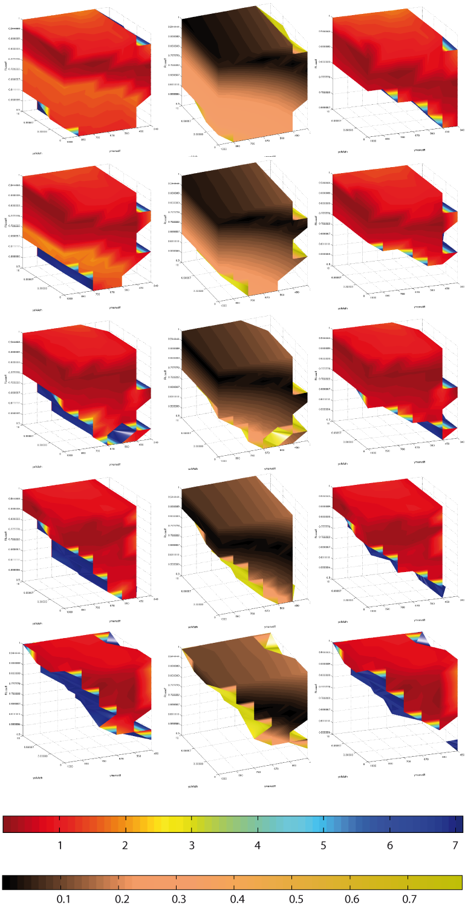
Fitness landscape of the yolk relaxation experiment. For caption, see Fig. .Mean cell cycle duration (green) compared with cycle duration at the beginning (blue) and the end (red) of the division cycle, averaged over six embryos. Image and caption adapted from .
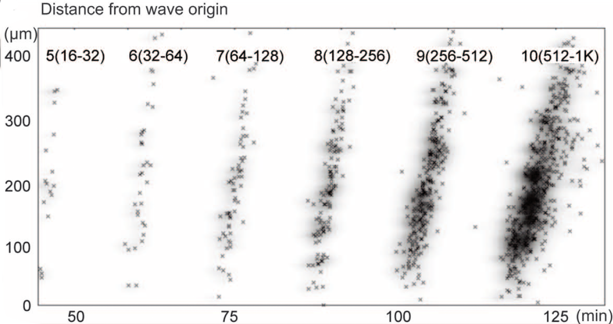
Scatter plot of mitosis time as a function of distance to the pseudo-wave origin. Image and caption adapted from .Cell cycle lengthening and loss of synchrony at the midblastula transition. Adapted from .Correlation of cell volume and cell cycle length for cycles 10 to 13. Adapted from .Median cell cycle lengths during blastula stages. Adapted from .
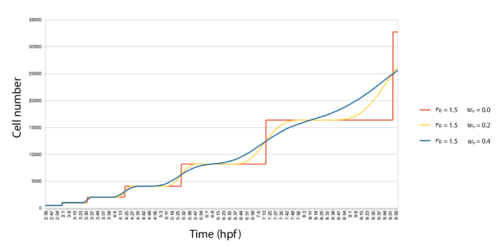
Theoretical cell number as a function of time of development in the geometric progression scenario. In ordinate, the number of simulated cells. In abscissa, time of development starting at 2h39. Three geometric progression scenario are plotted. Each of them starts from an initial simulated cell population comprising 512 cells with identical cell cycle length (see text), and identical common ratio (\(r_0 = 1.5\)). In red, the asynchrony is zero, all cells divide simultaneously at each cycle (\(w_r = 0\)). In yellow, cell cycles are desynchronizing reasonably at each cycle (\(w_r = 0.2\)), plateaus are still occurring in between mitosis cycles. In blue, a larger desynchronization (\(w_r = 0.4\)) leads to a progressive disappearance of the plateau as the cell population increases. Time-lapse movie of a developing zebrafish embryo. The embryo is imaged from the animal pole (slightly ventral). The movie starts at the 32-cell stage (Data set ID 071222bF, starting at 1h45min hpf) during the cleavage stages and goes on during the blastula and gastrula periods. By the end, only one layer of non-neural ectoderm remains between the yolk and the enveloping layer on the ventral side of the embryo. We need here the characteristics of the data, staining, voxel size timing.Manual tracking of a cell population through the Mov-It interface. The embryo shown in Fig. has been processed through the Bioemergences workflow. The yellow cubes correspond to the cells that have been manually corrected (position and tracking).
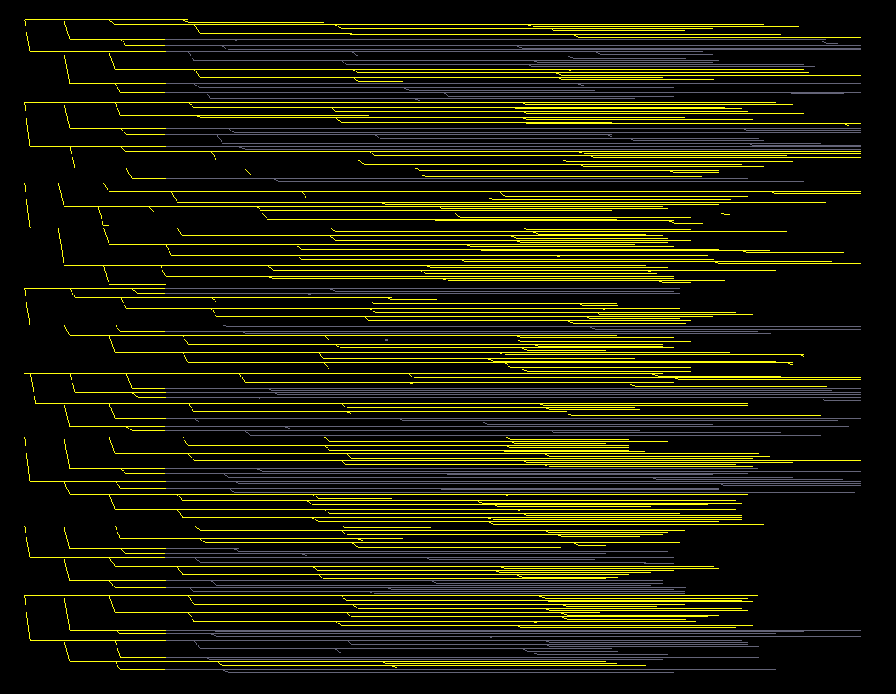
Lineage tree of the selected cell population. The selected population consists in eight cells picked at the time of cell cycle 9. At cycle 9 they divide quasi-synchronously (one cell out of the eight divides one time step, i.e. 3 min, after the others). The selected cells contribute to the formation of the EVL. As this differentiated tissue is expected to have a specific cell cycle dynamics (see Case Study 8.4), EVL cells were removed from the selected cell population after division cycle 11. EVL cell lineage removed from the analyzed data is indicated by the grey branches. Cell cycle 11 occurs at the onset of the epiboly at the time of doming, prior to what is usually considered as gastrulation (6 hpf). The selected cells tracking was checked and corrected as far as possible in time.
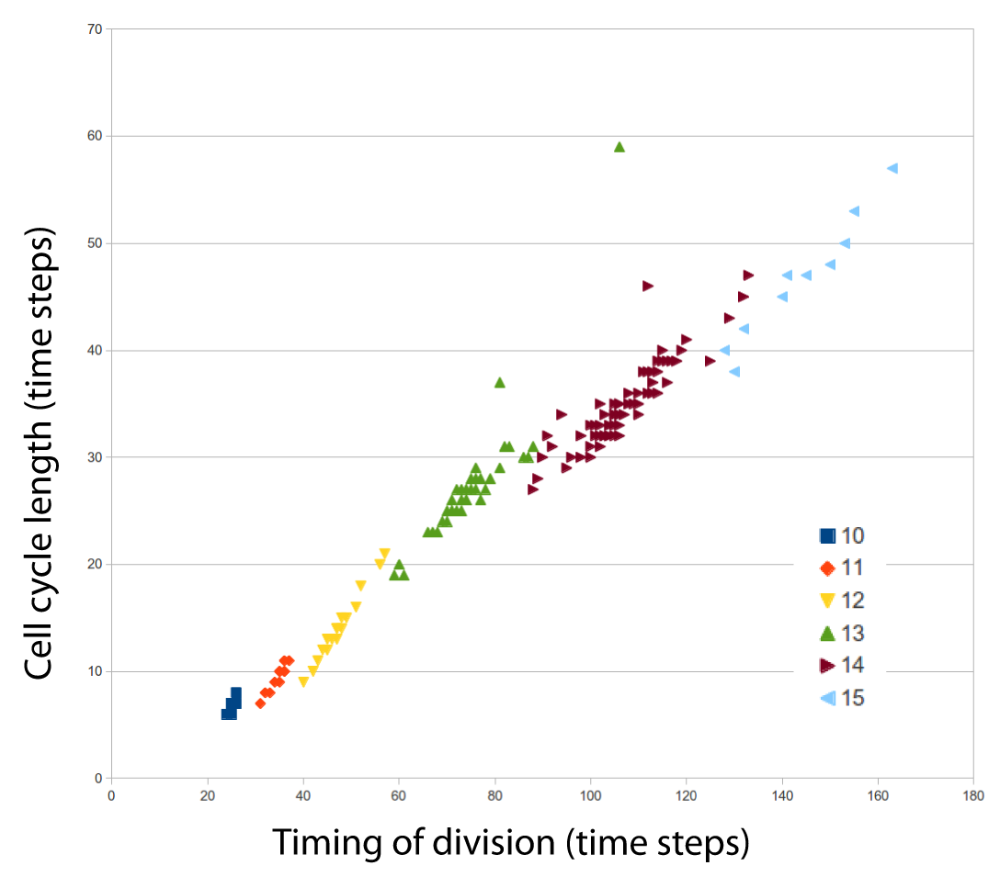
Plot of the cell cycle length for cells selected among the deep cells, as a function of the timing of the divisions. Colors and numbers represent the iteration of the cell cycle as indicated on the right. A cell is plotted at the time of a division as a function of the timing of its mother's division. Timing is indicated in time steps. Data manually validated by Ingrid Colin with Mov-IT.Selected cell population from the eight original clones. The color marks the current generation of the cell from 9 (blue) to 15 (red).
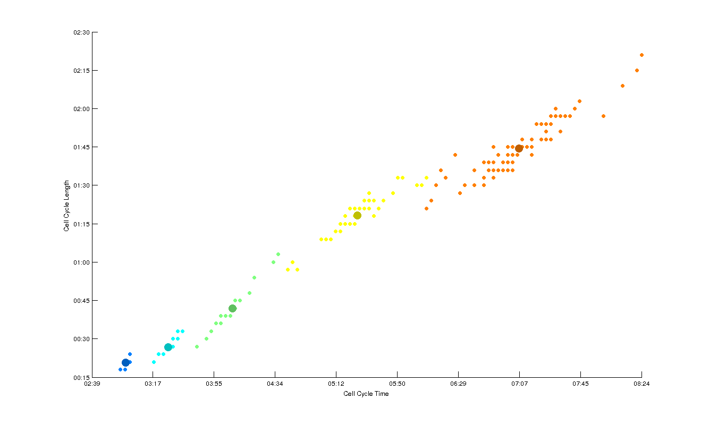
Plot of the cell cycle length as a function of the cell cycle time for the cell population selected in the digital specimen. The blue color represents the \(10^{th}\) cell cycle, light blue, the \(11^{th}\), green, the \(12^{th}\), yellow, the \(13^{th}\), and orange, the \(15^{th}\). Small dots correspond to single cells at the time of mitosis and large dots are the mean of the division timing for the corresponding cell cycle. The data is the same as Fig. without cell cycle 15 and after elimination of the three outliers discussed above. This data is used for confronting live experimental and simulated data.Plot of the cell cycle length as a function of the the cell cycle time for two simulated embryonic developments. In addition to the live cells plot, we provide two simulated distributions, one corresponding to a geometric progression, indicated by arrowheads (\(r_0 = 1.3\) and \(w_r = 0.4\), and one corresponding to an arithmetic progression, indicated by arrows (\(d_0 = 30 \mathrm{min}\) and \(w_d = 14 \mathrm{min}\)). For the sake of visualization, we picked here parameters that obviously did not provide the best fitness but kept the clouds separated.Ranges, cardinalities and units of the four parameters explored in this study.Fitness landscapes of the geometric progression rule in parameter space. The left plot is the global fitness landscape. In the right part of the figure: the top left plot is the landscape of the mean of the cell cycle time's normalized objective function \(\overline{F^{\mathrm{geo}}_{\mu}}(T_{\mathrm{cc}})\), the top right plot is the landscape of the standard deviation of the cell cycle time's normalized objective function \(\overline{F^{\mathrm{geo}}_{\sigma}}(T_{\mathrm{cc}})\), the bottom left plot is the landscape of the mean of the cell cycle length normalized objective function \(\overline{F^{\mathrm{geo}}_{\mu}}(L_{\mathrm{cc}})\), the bottom right plot is the landscape of the standard deviation of the cell cycle length normalized objective function \(\overline{F^{\mathrm{geo}}_{\sigma}}(L_{\mathrm{cc}})\). The color map of all five plots follows the same color bar presented on the left. Each plot provides the cell cycle distribution center \(r_0\) on the abscissa axis and the distribution range coefficient \(w_r\) on the ordinate axis. Both parameters are explored in the range presented in Fig.
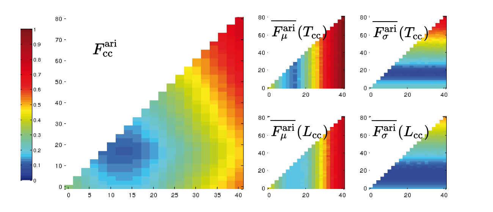
Fitness landscapes of the arithmetic progression rule in parameter space. The left plot is the global fitness landscape. In the right part of the figure: the top left plot is the landscape of the mean of the cell cycle time's normalized objective function \(\overline{F^{\mathrm{ari}}_{\mu}}(T_{\mathrm{cc}})\), the top right plot is the landscape of the standard deviation of the cell cycle time's normalized objective function \(\overline{F^{\mathrm{ari}}_{\sigma}}(T_{\mathrm{cc}})\), the bottom left plot is the landscape of the mean of the cell cycle length normalized objective function \(\overline{F^{\mathrm{ari}}_{\mu}}(L_{\mathrm{cc}})\), the bottom right plot is the landscape of the standard deviation of the cell cycle length normalized objective function \(\overline{F^{\mathrm{ari}}_{\sigma}}(L_{\mathrm{cc}})\). The color map of all five plots follows the same color bar presented on the left. Each plot provides the cell cycle distribution center \(d_0\) on the abscissa axis and the distribution range coefficient \(w_d\) on the ordinate axis. Both parameters are explored in the range presented in Fig. Plot of the cell cycle length \(L_{\mathrm{cc}}\) as a function of the cell cycle time \(T_{\mathrm{cc}}\) for the simulated embryonic development with the best set of parameters for the geometric progression rule. This phenotype has also the best fitness of this study (\(r_0 = 1.5\), \(w_r = 0.4\)).Plot of the cell cycle length \(L_{\mathrm{cc}}\) as a function of the cell cycle time \(T_{\mathrm{cc}}\) for the simulated cells generated with the best set of parameters for the arithmetic progression rule. This phenotype corresponds to the following parameters: \(d_0 = 14\,\mathrm{min}\), \(w_d = 18\,\mathrm{min}\).Cleavage and blastula period. A-F: Cleavage period. G-J: Blastula period. All face views except for B, which shows the embryo twisted about the animal-vegetal axis, roughly 45 degrees from the face view. A: 2-cell stage (0.75 h). B: 4-cell stage (1 h). C. 8-cell stage (1.25 h). D: 16-cell stage (1.5 h). E: 32-cell stage (1.75 h). F. 64-cell stage (2 h). G: 256-cell stage (2.5 h). H: high stage (3.3 h). I. transition between the high and oblong stages (3.5 h). J. transition between the oblong and sphere stages (3.8 h). Scale bar in F.: 250 \(\mu\)m. Image and caption adapted from Kimmel et al. (1995) Complete abstract schema of the different particle types involved in the modeled embryo and their interactions. Red circles represent the deep cells (DC), yellow squares the yolk membrane (YM) particles, pale yellow triangles the yolk interior (YI) particles, and blue crosses the EVL cells. A: The two bigger orange squares represent YM particles that are labeled margin as the EVL is attached to the yolk in this position. B: Table of interactions by particles types. Each box indicates the section of the manuscript where a description of the interaction is available. Some interactions are not specified (--).
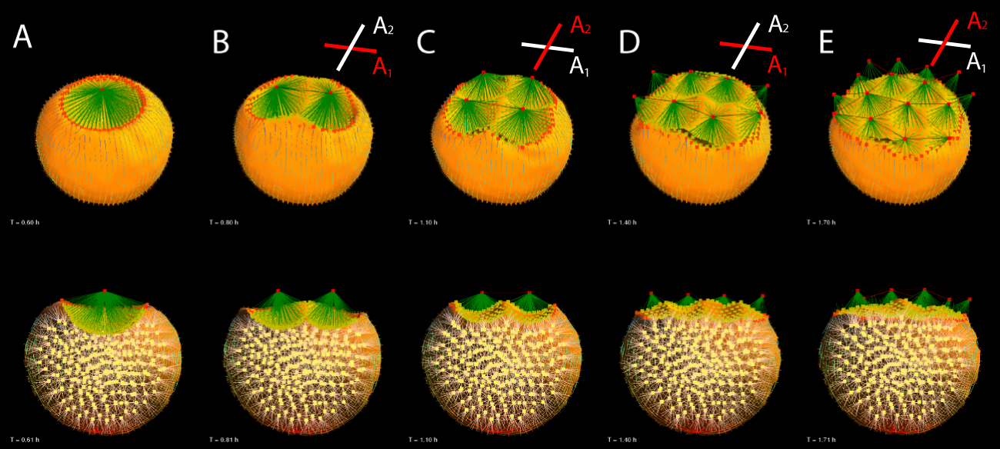
Division orientation in the model from cycle 1 to cycle 4. DC particles are represented by red cubes, YI in yellow, marginal YM in dark orange. Only the YM located above the margin are shown, the rest of the yolk membrane is represented by an orange surface. Top row: external view of the simulated embryo. The orthogonal axes \(A_1\) and \(A_2\) specify the axes of the division, which alternate during the first 4 cycles (red indicates the last axis). Bottom row: sagittal section of the 3D embryo rendering. A: zygote stage. B: 2-cell stage. C: 4-cell stage. D: 8-cell stage. E: 16-cell stage. A dynamical rendering is available in Movie . Division orientation in the model. For caption, see Fig. .
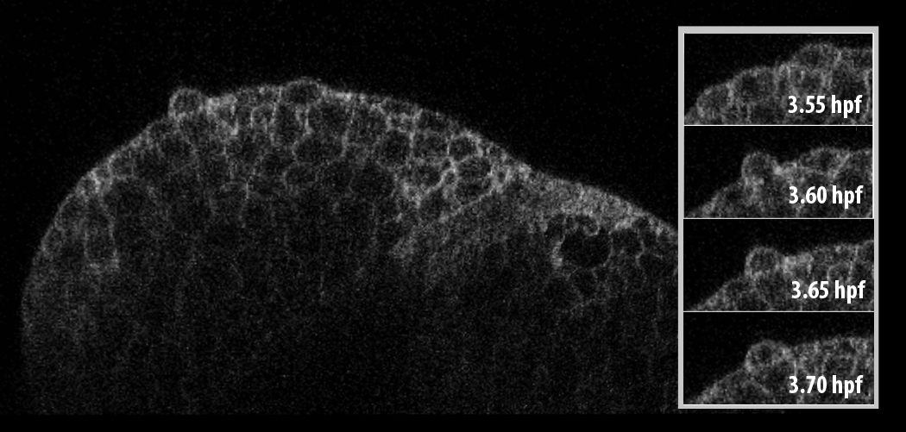
Exceptional (and last) radial cell divisions in the EVL at the cycle 11 (1024 to 2048 cells). These events are not taken into account in the present model, and shown here only as complementary information. Raw image from a live specimen imaged at the oblong stage (3.65 hpf). Insets on the right focus on one particular radial cell division, which spawns a daughter cell into the DC population and keeps the other in the EVL compartment. However, the great majority of cell divisions happening at the same time in the EVL (but not visible here) are oriented tangentially to the embryo surface.
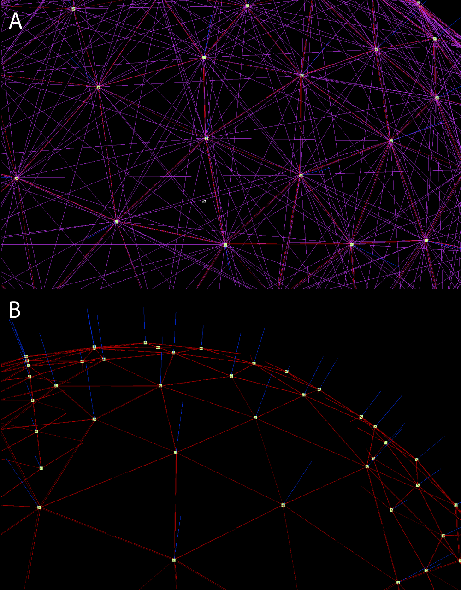
Typical EVL neighborhoods. A: Superposition of the metric neighborhood \(\mathcal{N}^{m, \mathrm{E}}_i\) (purple edges) and topological neighborhood \(\mathcal{N}^{t, \mathrm{E}}_i\) (red edges) on each EVL cell. B: The outward-pointing normal vectors \(\vec{U}_{\mathrm{E}, i}\) (blue lines) are obtained by averaging the normal vectors all the triangles composing the topological neighborhood of cell \(i\). Dynamical view of the EVL neighborhoods. For caption, see Fig. A.Spatial neighborhood between the EVL cells and the deep cells. This view is a 2D slice (not a 3D perspective) perpendicular to the EVL. It illustrates a late developmental stage to emphasize the size disparity between EVL cells and deep cells. Three EVL cells are displayed with their topological EVL-EVL neighborhood links (red edges). All the red cubes below are the deep cells. Topologically, we distinguish three types of cells: Below the dashed lines are the cells too distant from the EVL. Above the dashed line are the DC particles that belong to the metric neighborhoods of EVL cells \(\mathcal{N}^{m, \mathrm{E:D}}_j\). The cells surrounded by a green box are the ones that are eliminated by the topological rule: each one contains in its regular DC-DC metric neighborhood \(\mathcal{N}^m_i\) a neighbor \(k\) higher above in the normal direction. The top layer of deep cells, are the final topological neighbors of the EVL cells. The light purple lines represent the topological neighborhoods and the beige lines the metric neighborhoods.Region of attachment of the EVL to the yolk, or margin. A: Metric (thin purple lines) and topological (fat pink lines) neighborhoods between EVL cells and the MYM particles. B: Concentric yolk marginal circles. From the vegetal pole (bottom) to the animal pole (top) of the yolk, YM particles are classified into 25 concentric latitudes, which are displayed here with a color map from red to blue. The pink lines on top are the same as in A, but the EVL cells are hidden.
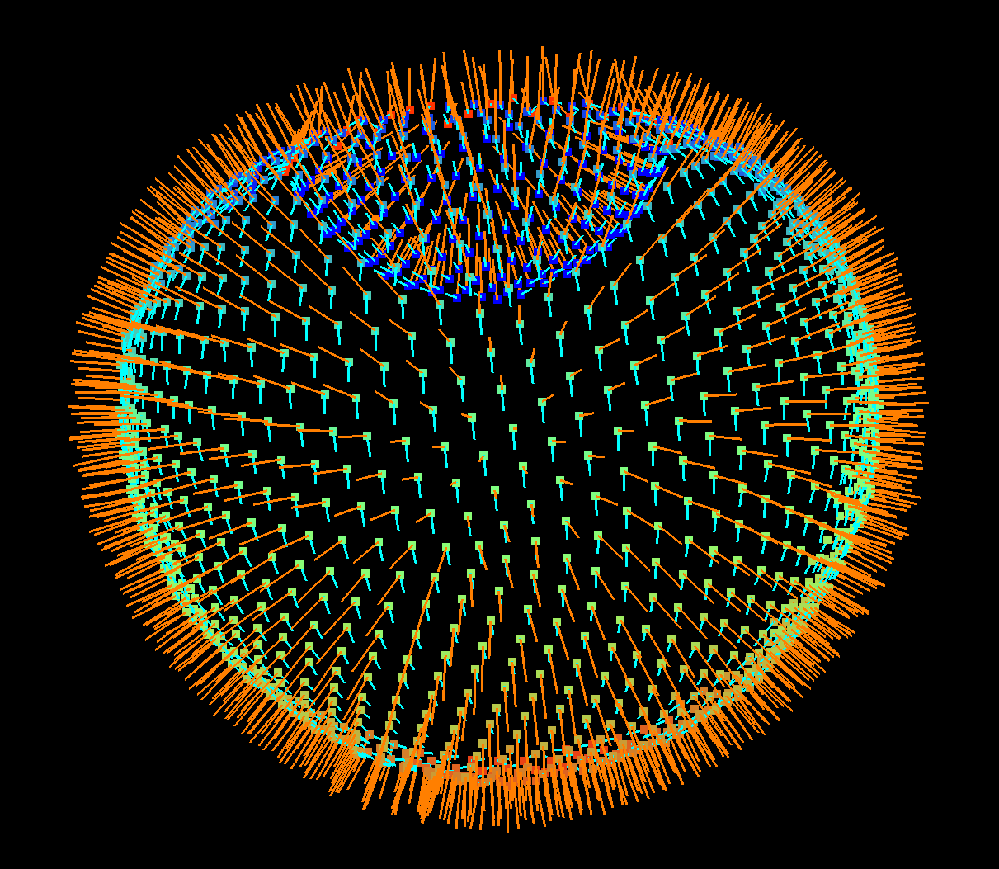
Yolk membrane particles' normal and tangential vectors. At each time step, each YM particle \(j\) updates its outward-pointing normal vector \(\vec{U}_{\mathrm{ym},j}\) (orange lines). It also updates a tangential vegetal-pole-oriented vector denoted by \(\vec{U}^{\parallel}_{\mathrm{ym},j}\) (blue lines), which will be used later on, in the fifth case study (Section 8.5).Superposition of nuclear centers from experimental and simulated data. The experimental data (green centers) is from the dataset ID 081014h of .
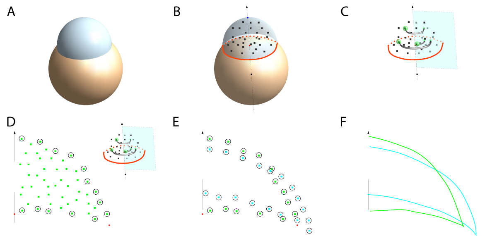
A 2D alpha shape strategy for assessing the embryo shape evolution. A: schematic view of the embryo, with the blastoderm area in blue and the yolk in beige. B: The vertical arrow indicates the animal-vegetal (AV) axis, the red line delineates the blastoderm margin, i.e. the interface between the yolk, the blastoderm and the environment. C: Each cell position is projected on a half-plane by rotation around the AV axis. D: A 2D alpha shape yields the positions of the cells at the blastoderm surface, characterizing the contour of the embryo. E: Two different 2D shapes from two embryos are superimposed. F: The discrete shapes are interpolated via analytical functions.Early cleavage patterns and compaction are disrupted in injected embryos. Zebrafish embryos were injected with control morpholino oligonucleotide (MO), or cdh1 MO, and monitored by time-lapse microscopy. In control embryos (top panel), cleavage planes were regular, blastomeres were approximately equal in size, and cells were strongly adherent and formed a compact mass atop the yolk cell. In cdh1 MO-injected embryos (bottom two panels), the orientation of cleavage planes between blastomeres was irregular, cell size was unequal, adhesion between blastomeres was reduced, and the embryos did not compact normally. hpf: hours post-fertilization. Scale bar 100 \(\mu\)m. Image and caption from Regional membrane turnover within the apical membranes of Fundulus enveloping layer cells. Pairs of photographs showing the temporal progression of membrane turnover (seen as loss of fluorescence) of EVL cells labeled with fluorescent lectin (A-D) and lipid (E-H). Embryos stained with fluorescent lectin initially show a uniform pattern of fluorescence (A). Six hours later, apical membrane turnover has removed the fluorescent markers from regions where three or more cells come in contact. This loss of fluorescence continues, and by 18 hr (C) after staining, lectin turnover has spread from the cellular contact points along the cell margins. By 36 hr after lectin staining, fluorescence is restricted to a central domain (D). This same pattern of membrane turnover is seen when embryos are labeled with fluorescent lipid: (E) uniform staining at Time = 0 hr; (F) loss of fluorescence at cellular contact points 12 hr after staining; (G) formation of a nonfluorescent peripheral domain 29 hr after staining; and (H) lipid turnover 42 hr after staining creates a peripheral band that extends 10-12 \(\mu\)m inward from cell boundaries. Scale bar, 30 \(\mu\)m. Image and caption from Fink and Cooper, 1996 Reconstruction of the EVL from 3D+time imaging. Both images belong to the same dataset 070418a and have been generated by the Mov-It software. A. Superposition of the convex hull (blue surface) calculated from the swarm of cell centers, the volume rendering of the cell membrane channel (yellow signal), the cell positions (cubes) and the cell neighborhood edges (lines connecting the cubes). The manual validation and correction of the cell positions, cell tracking and cell neighborhoods of the yellow/green population were corrected by Adeline Boyreau, the pink population corresponds to the automated reconstruction. B: Volume rendering of the nucleus channel.Dynamical evolution of the enveloping layer neighborhood from the high stage-oblong stage transition to the germ-ring stage. See Fig. for caption.Temporal alignment of cell divisions. The abstract examples of mitosis displayed to illustrate the strategy do not belong to the real measured population \(\mathcal{M}^l\). The colors identify individual mitoses \(m\) of \(\mathcal{M}^l\) in both panels. A: 5 mitoses occurring at various time steps. B: The same mitoses translated in the new timeline \(t'\). The measured quantities represented by the colored lines are available for each time step \(t'\). The quantities are considered if they belong to the \(\left[ -50, 50 \right]\) interval. Beyond this interval, the discarded values are covered by a white overlay.Histogram of the number of neighbors in the whole population \(\mathcal{E}\) and comparison with other tissues. A: In ordinate, the frequencies of the degree \(D^l_k\) observed in the corrected population \(\mathcal{E}\). Error bars indicate the standard deviation for each degree's frequency. Measures calculated and plotted by Paul Villoutreix. B: Comparison of the distributions of degrees in the Drosophila wing disc (blue, 2,172 cells), the Hydra epidermis (orange, 602 cells), the Xenopus tail epidermis (yellow, 1,051 cells), the chick pre-streak (green, 351 cells), the chick lateral streak (brown, 634 cells), the chick streak (pale blue, 613 cells), and the zebrafish enveloping layer during epiboly phase 1 (dark green, 5725). Data for Drosophila, Hydra and Xenopus are extracted from Gibson et al. , data for the chick epithelia are extracted from Sandersius et al. .Evolution of the EVL cells' average surface. A: Temporal evolution of the average cell surface \(\lt\!S^l(t)\!\gt\) in the population \(\mathcal{E}\). The measure starts at time step 4 (3h52min) and ends at time step 103 (5h43min). Consecutive time steps are separated by 1min07s. An increase of 50 percent is measured during this period. B: Temporal evolution of the average cell surface \(S^l_{\mathrm{mit}}(t')\) around mitosis. All 52 mitoses are superposed as if they were occurring simultaneously at time step \(t'=0\). The cells' apical surfaces are normalized so that the surface of the cell measured immediately after mitosis is equal to 1. The average and standard deviation at each time step before and after mitosis are calculated and plotted. Both measures were calculated and plotted by Paul Villoutreix.Evolution of the EVL cells' average degree. A: Temporal evolution of the averaged cell degree \(\lt\!n^l(t)\!\gt\) in the population \(\mathcal{E}\). The measure starts at the time step 4 (3h52min) and ends at the time step 103 (5h43min). Consecutive time steps are separated by 1min07s. The average degree remains roughly constant during this period. B: Temporal evolution of the average cell degree \(n^l_{\mathrm{mit}}(t')\) around mitosis. All 52 mitoses are superposed as if they were occurring simultaneously at time step \(t'=0\). The average and standard deviation at each time step before and after mitosis are calculated and plotted. Both measures were calculated and plotted by Paul Villoutreix.The simulated embryo's EVL during epiboly phase 1. All deep cells are colored in blue. The color of the EVL cells indicates the degree of the cell (see legend). First row: the embryo is cut along the bilateral symmetry plane, the yolk is empty as no yolk interior particles are represented. Second row: external view of the embryo. A: onset of epiboly (approx. 3.9h simulated time). B: 30-percent epiboly stage (approx. 4.85h simulated time). C: 50-percent epiboly, the internalization is not modeled here (approx. 5.7h simulated time). The movie from which these images are extracted is Movie .
The simulated embryo's EVL during epiboly phase 1. see Fig. for caption.Range, cardinalities and units of the three parameters explored in this study.3D plot of the average surface evolution function \(F_S\). The vertical axis indicates the EVL growth ratio \(\gamma_{\mathrm{E}}\), the depth axis indicates the limit radius coefficient \(c^{\mathrm{lat,E}}_{\mathrm{lim}}\) and the horizontal axis indicates the pressure threshold \(\theta^{-}_{\mathrm{E}}\).3D plot of the average degree evolution function \(F_n\). The red potholes visible on the lower limit radius coefficient \(c^{\mathrm{lat,E}}_{\mathrm{lim}}\) face of the cube are due to simulation divergence. See Fig. for details.3D plot of the average degree distribution function \(F_D\). See Fig. for details.3D plot of the average mitotic surface function \(F_{S,\mathrm{mit}}\). See Fig. for details.3D plot of the average mitotic degree function \(F_{n,\mathrm{mit}}\). See Fig. for details.3D plot of the global fitness function \(F\). See Fig. for details.Early gastrula period. Face views. A: transition between the high and oblong stages (3.5 h). B. transition between the oblong and sphere stages (3.8 h). C: Dome stage (4.3 h). D: 30-percent epiboly stage (4.7 h). E: 50-percent epiboly stage (5.25 h). Scale bar: 250 \(\mu\)m. Image and caption adapted from Kimmel et al. (1995) Wild type zebrafish embryo imaged live from the oblong stage to 30-percent epiboly. We observe here a slice passing approximately through the center and the animal pole of the embryo. A: oblong stage. B: transition between oblong and sphere stage. C: sphere stage. D: transition between sphere and dome stage. E: dome stage. F: transition from dome to 30-percent epiboly stage. Dataset ID 071222bF. The movie from which these images are extracted is available in Wild type zebrafish embryo from the 32-cell stage to the 75-percent epiboly stage. We observe a slice passing approximatively through the center and the animal pole of the embryo. The period of interest is from the high stage (\(T=34\)) to the germ ring stage (\(T=110\)). We notice empty gaps that appear under the EVL during the phase 1 epibolic motion, suggesting that the deep cells would intercalate more toward the yolk than toward the EVL. Dataset ID 071222bF.Mechanism controlling the passive sliding of the blastoderm and EVL margin toward the vegetal pole. A: Sagittal section of the simulated embryo at the onset of epiboly. B: Sagittal section at 30 percent epiboly. C: Zoom on the marginal region of the embryo at 30 percent epiboly. When a deep cell (DC, red) \(j\) is in contact (green lines) with a margin yolk membrane (MYM, orange) particle \(i\), a pushing force \(F^{\mathrm{m:D}, \parallel}_{ij}\) is calculated to estimate the mechanical pressure exerted by exerted by \(j\) on the margin at the cellular level. If this force exceeds a certain resistance threshold \(\theta_{\mathrm{m}, \parallel}\), the MYM particle looses its marginal properties, and transmits it to one or several regular YM particle(s) at a more vegetal latitude. C: Schema describing the pushing force exerted by DC particle \(j\) over MYM cell \(i\). The pushing force is non-zero only if the distance between the positions of \(j\) and \(i\) projected on the tangential vector \(\vec{U}^{\parallel}_{\mathrm{ym},i}\) (not shown) is smaller than the equilibrium distance \(r^{\mathrm{eq}, \parallel}_{ij} = c_{\mathrm{eq}} (R_i + R_{\mathrm{ym}}) \). The orange and red circles highlight the radii of cells \(j\) and \(i\) respectively.Ligand diffusion table \(\mathscr{L}\) for the Intercalation case study. Two gradient fields are established by ligand diffusion across the dome region formed by the deep cells. They contribute to the specification of the axes of the polarization: a ligand \(Q_1\) is secreted by the EVL with secretion rate \(s_1 = 1000\) and absorbed by the yolk membrane particles, more precisely the YSL. Conversely, a ligand \(Q_2\) is secreted by the YSL with rate \(s_2 = 1000\) and absorbed by the EVL.Active protrusion table \(\mathscr{A}\) for the Intercalation case study. A: All the cells belonging to the \(\mathcal{T}_{\mathrm{red}}\) population exert bipolar protrusions over each other along the polarization axis \(\vec{U}_1\) derived from the gradient field of ligand \(Q_1\). B: The same cells can exert another bipolar protrusion along \(\vec{U}_2\) derived from \(Q_2\). In both cases, the intensity of the protrusive force is \(f^A\). Macroscopic landmarks of the epibolic deformation from the flipbook specimen. Snapshots of the zebrafish development from the oblong stage to 50 percent epiboly extracted from the movie by Karlstrom and Kane . Colored dots have been manually added to estimate the macroscopic morphological characteristics of the embryo: red dots signal the animal pole of each embryo, green dots the vegetal pole, blue dots the animal-pole limit of the yolk, and triplets of yellow dots delineate the margin, where the left and right dots identify the external position of the margin and the central one correspond to their averaged projection on the AV axis. The time value displayed below the image id is the time in hours post fertilization given by . These timings do not scale linearly with the image ids and have been renormalized.Macroscopic measures of the epibolic deformation in the flipbook specimen. The measures defined by the macroscopic landmarks displayed in Fig. are shown. The red line is the plot of the distance between the animal pole (AP) of the embryo and the vegetal pole (VP) of the yolk (embryo height). The green line is the plot of the distance between the projection of the margin on the animal-vegetal (AV) axis and the VP of the yolk (margin height). The blue line is distance between the AP of the yolk and the VP of the yolk (yolk height). The yellow line is the lateral distance between the margin positions (margin diameter). The dashed lines give the absolute distance between landmarks in pixels (left ordinate axis). The continuous lines give the normalized distances (right ordinate axis). The normalization is obtained by dividing each value by the current yolk height (i.e. dashed red line). The abscissa gives the time in hour post fertilization.Macroscopic landmarks of the epibolic deformation in simulated specimens. Landmark dots have been manually added for the purpose of the illustration. They represent the macroscopic landmarks automatically calculated by the simulated measurements. The grey line is the animal-vegetal (AV) axis, a priori specified for the initialization. The red dot is the embryo animal pole \(\mathbf{M}^{\mathrm{E}}_{\mathrm{A}}\), the blue dot is the yolk animal pole \(\mathbf{M}^{\mathrm{Y}}_{\mathrm{A}}\), the black dot is the embryo center \(\mathbf{M}_{\mathrm{o}}\), the green dot is the embryo vegetal pole \(\mathbf{M}^{\mathrm{E}}_{\mathrm{V}}\), the orange dot is the margin level \(\mathbf{M}_{\mathrm{m}}\), i.e. the average of all the projections of margin yolk membrane particles (small orange circles) on the AV axis (only a few of these particles are displayed). Note that the position of the yolk animal pole, embryo animal pole and embryo vegetal pole are never exactly aligned on the AV axis as they must coincide with one particle's position. The deep cells are not displayed here, leaving a carved out domain between the yolk cell and the EVL.Macroscopic measures of the epibolic deformation in a simulated specimen. Six snapshots corresponding to different stages of a simulated embryo are displayed along with the temporal evolution of the corresponding macroscopic measures (blue), compared with the flipbook measures (white). Sphericity is represented by the dash-dot lines, normalized yolk height by the solid lines and normalized margin height by the dashed lines. The embryos' positions correspond approximately to the snapshot times in abscissa. The simulated embryo parameters are: ligand source \(Q_2\) on the yolk, \(\theta_{\mathrm{m}, \parallel} = 5.33\), \(\lambda_r = 0\), \(\theta^{-}_{\mathrm{E}} = 56.67\) and \(f^A = 3556\). The movie from which these snapshots are extracted can be viewed in .Simulated embryo during epiboly phase 1. see Fig. for caption.Range, cardinalities and units of the five parameters explored in this study.Fitness landscapes as a function of the random parameter \(\lambda_r\) and the protrusive force intensity parameter \(f^A\). Top Left: global fitness function. Top Right: normalized yolk height objective function \(F_{\mathrm{Y}}\). Bottom Left: normalized margin height function \(F_{\mathrm{m}}\). Bottom Right: sphericity objective function \(F_{\Phi}\). On each plot, the random parameter \(\lambda_r\) is shown in abscissa and the protrusive force intensity \(f^A\) in ordinate. The color maps scale between zero and the maximum value of the fitness landscape that they are associated with (to the left).Fitness landscapes as a function of the random parameter \(\lambda_r\) and the protrusive force intensity parameter \(f^A\), with the yolk as a ligand source (value 2). Each of the 9 subplots is equivalent to the landscapes presented in Fig. . From top left to bottom right, the margin resistance \(\theta_{\mathrm{m}, \parallel}\) increases regularly from 1 to 35.666 (the last subplot for value 40 was removed to avoid excessive image reduction). The threshold controlling the EVL resistance \(\theta^{-}_{\mathrm{E}}\) is set to 72. The whole dataset of these fitness landscapes is available here.Fitness landscapes as a function of the random parameter \(\lambda_r\) and the protrusive force intensity parameter \(f^A\), with the EVL as a ligand source (value 1). Except for the source, the parameter space mapped here is the same as in Fig. 3D plot of the normalized margin height objective function \(F_{\mathrm{m}}\). The isosurface represents the best fitness volume (threshold 0.38). The protrusive force intensity \(f^A\) has been set to 3555. The vertical axis indicates the random parameter \(\lambda_r\), the depth axis indicates the threshold controlling the EVL resistance \(\theta^{-}_{\mathrm{E}}\) and the horizontal axis indicates the margin resistance threshold \(\theta_{\mathrm{m}, \parallel}\). This 3D objective function landscape has been rotated, unlike the following ones, to show a better angle of view. The interactive 4D visualization tool is available here for download (MATLAB required)3D plot of the normalized yolk height objective function \(F_{\mathrm{Y}}\). The threshold of the isosurface is set to 0.56. See Fig. for details.3D plot of the sphericity objective function \(F_{\Phi}\). The threshold of the isosurface is set to 1.20. See Fig. for details.3D plot of the global fitness function \(F\). The threshold of the isosurface is set to 0.69. See Fig. for details.Normalized position of the cells along the radial axis \(\mathcal{L}^R_i\). The measure is applied to the cell \(i\) in green shape with its approximate center as a black dot, at position \(X_i\). It represents the fraction of the height of \(X_i\) on the segment going from \(X_{i, \mathrm{Y}}\) to \(X_{i, \mathrm{E}}\).Illsutration of the microscopic measure of cell intercalation \(M^{R}_{i}\). Three fictive cell trajectories in normalized radial displacement space: Cell 0 (blue), Cell 1 (red), Cell 2 (yellow). Cell 1 performs a continously increasing radial displacement between position \(0.1\) at \(t_0\) and position \(0.55\) at \(t_9\), yielding ameasure of \(M^{R}_{1} = 0.45\). Cells 0 and 2 display random radial displacements through time, which are characterized by higher microscopic measure values \(M^{R}_{0} = 1.45\) and \(M^{R}_{2} = 1.55\).Tangential dispersion of the cells during intercalating behaviors. Cylinders similar to the one visible at the beginning of the video could be used at various position to characterize the tangential spreading of cell population.MZoep mutant. A: Live MZoep mutant embryo at 30 hours of development. The ventral mesoderm gave rise to a few somites in the most posterior part of the embryonic axis. The epiblast converged, shaping the antero-posterior axis. Image and caption adapted from Mathieu et al. B: Dorsal markers expressed in the ectoderm (otx2, anteriorly, and hoxb1b, posteriorly), are still present in the MZoep mutant. Both domains are however narrower in the mutant. An interesting interpretation would be that the narrower domains are the result of a faster convergence in the mutant, due to the lack of hypoblast. Image adapted from Jia et al. .Dorso-ventral displacement of the cells during convergent extension. Each arc identifies individual cell positions along the dorso-ventral longitudes at a given time step. The black lines link the same individual cells at both time steps. The sum of the lengths of these links correlates with the speed of intercalation. Image and caption adapted from Carmany-Rampey and Schier Third harmonic generation (THG) imaging of the zebrafish embryo adapted from Movie of Zebrafish Development, 2-cell stage to 16-somite stage (approx. 17h later). By Rolf Karlstrom and Don Kane; Development 123:461, 1996 Embryo performing fluid-like intercalation. As the active protrusion forces are exceeding the passive cohesion forces in the cell tissue, cells intercalate wildly in the cell mass, without initiating an epibolic deformation. The key parameters in this simulation are: ligand source from the YSL, \(\theta_{\mathrm{mym}, \parallel}\) = 15, \(\lambda_r\) = 0.06, \(\theta^{-}_{\mathrm{evl}}\) = 72 and \(f^A\) = 6000. See 8.5.1 for details about the simulation.Deep cell perforating the yolk membrane during phase 1 epiboly. This simulated embryo possesses an enveloping layer (EVL) that resists to external tension and hardly allows an increase of its surface. The consequence is dramatic when the deep cell margin reaches the yolk equatorial latitude, a second abnormal phenomenon happens as, due to a very low margin resistance, the yolk membrane starts to roll at the margin, blocking further deep cells' advance. The rolled yolk membrane gets stretched and eventually is not sufficient to restrain the deep cells progression into the yolk volume. The key parameters in this simulation are: ligand source from the YSL, \(\theta_{\mathrm{mym}, \parallel}\) = 3.6, \(\lambda_r\) = 0.0, \(\theta^{-}_{\mathrm{evl}}\) = 150 and \(f^A\) = 3500. See 8.5.1 for details about the simulation.Relaxed EVL and margin, and random polarization during phase 1 epiboly. Left: YSL as a source of the polarization field scenario. Right EVL as a source scenario. The parameters in this simulation are: \(\theta_{\mathrm{mym}, \parallel}\) = 1, \(\lambda_r\) = 0.1, \(\theta^{-}_{\mathrm{evl}}\) = 10 and \(f^A\) = 3500. Poor movie rendering have slightly elongated the shape of both embryos.Constraining EVL and margin, with regular polarization fields during phase 1 epiboly. Left: YSL as a source of the polarization field scenario. Right EVL as a source scenario. The parameters in this simulation are: \(\theta_{\mathrm{mym}, \parallel}\) = 35, \(\lambda_r\) = 0.005, \(\theta^{-}_{\mathrm{evl}}\) = 120 and \(f^A\) = 3500.The enveloping layer compartment measures can be regionalized in spatial zone. Here, we define 3 zones along the animal-vegetal axis.